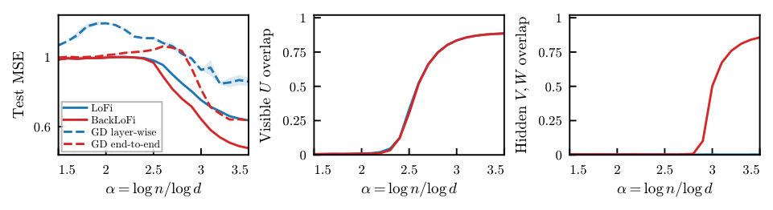
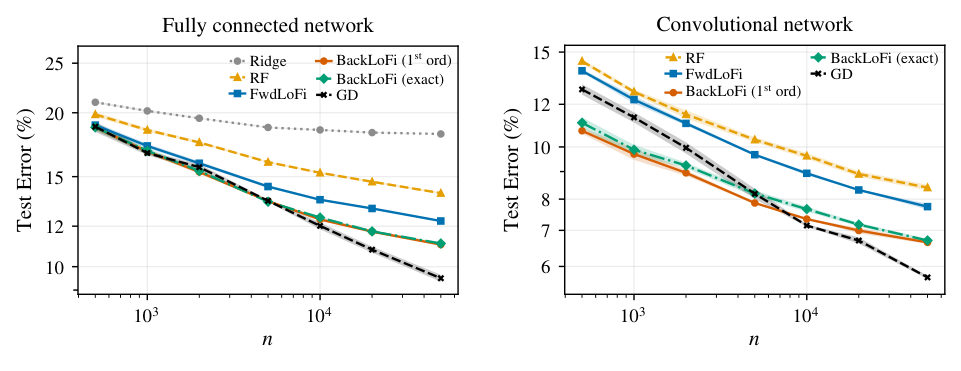
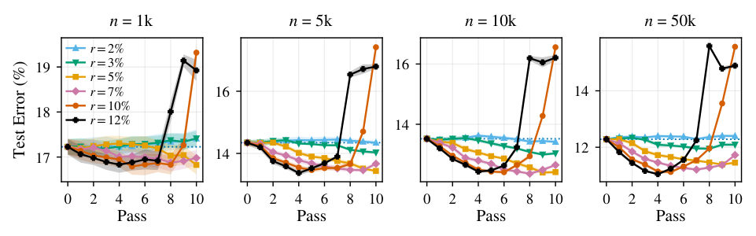

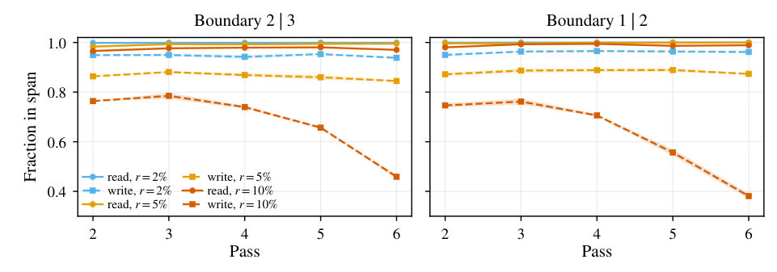
← Index · ← Previous · Next →
Authors: Harsh Jain, Manideep Gone, Nabyendu Das
Type: theory · Category: other · PDF: https://arxiv.org/pdf/2610.32224v1
Analysis basis: full PDF text, analyzed in chunks
Topic relevance: Keldysh / 2PI / non-Gaussian methods 2/5
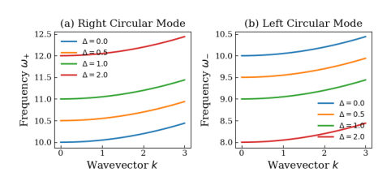
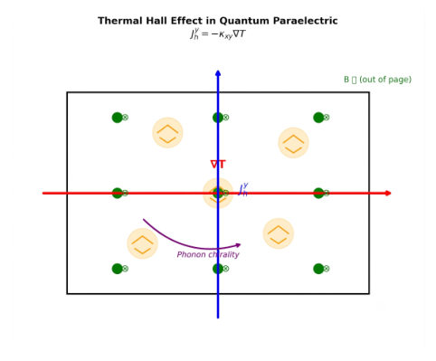
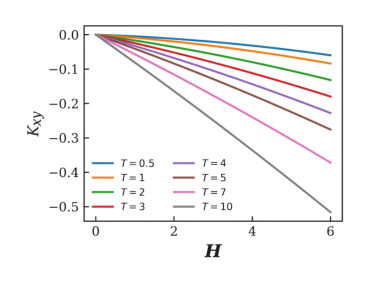
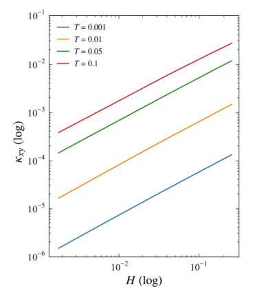
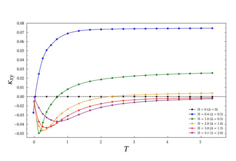
Summary. This paper develops a microscopic theory for the thermal Hall effect in quantum paraelectrics, attributing the effect to intrinsic paramagnetism arising from optical phonon fluctuations. By modeling the magnetic field's effect on phonon modes, the authors derive $\kappa_{xy}$ using chiral Green's functions, predicting characteristic scaling laws near quantum critical points observed in materials like SrTiO3.
Why it may be interesting. The work provides a detailed, microscopic mechanism linking lattice dynamics (phonons) and magnetic response (paramagnetism) to a measurable transport property ($\kappa_{xy}$), which is highly relevant to understanding emergent quantum phenomena in solids.
Main problem. The paper proposes a microscopic theory to explain the phonon-mediated thermal Hall effect in quantum paraelectrics.
Main result. The thermal Hall conductivity ($\kappa_{xy}$) is shown to be directly proportional to the difference in spectral weights of the two chiral phonon branches, establishing a link between phonon chirality and transverse heat transport.
Method. The authors use chiral phonon Green's functions and the Kubo formalism to derive $\kappa_{xy}$ from the heat-current correlation function.
Model / system. The system is a quantum paraelectric material where the mechanism is driven by intrinsic paramagnetism arising from quantum fluctuations of optical phonon modes. The effective Lagrangian includes a magnetoelectric term $\mathbf{H} \cdot (\mathbf{P} imes \dot{\mathbf{P}})$, which splits the phonon spectrum into chiral branches.
Key observables. Thermal Hall conductivity ($\kappa_{xy}$); spectral weights difference ($A_+^2 - A_-^2$); temperature and magnetic field dependence of $\kappa_{xy}$.
Important parameters / regimes. External magnetic field ($H$); phonon gap ($\omega_0$); temperature ($T$); the scaling exponent $\alpha \approx 0.41$ near the quantum critical point.
Assumptions / limitations. The theory relies on linear response theory, the Kubo formalism, and the assumption that the magnetoelectric coupling leads to a chiral splitting of the optical phonon modes.
Figures summary. Figures illustrate the chiral phonon dispersion relation $\omega_{\pm}(k)$ showing Zeeman-like splitting, and plots demonstrate the predicted field-dependent, temperature-dependent, and power-law scaling of $\kappa_{xy}$ near the quantum critical point.
Paper structure. The paper develops the theory by first identifying the magnetoelectric coupling term, which leads to chiral phonon splitting. It then uses Green's functions and the Kubo formalism to calculate $\kappa_{xy}$, culminating in predictions for the field, temperature, and quantum critical scaling behavior.
We propose a microscopic theory of the phonon-mediated thermal Hall effect in quantum paraelectrics, driven by the intrinsic paramagnetism due to quantum fluctuations of the (nearly) critical optical phonon modes. The effective magnetization due to temporal fluctuations of the assosciated dipoles couple to an external magnetic field resulting the magnetoelectric term $\mathbf{H} \cdot (\mathbf{P} \times \dot{\mathbf{P}})$ in the effective Lagrangian density of the polarisation field $\mathbf{P}$. This coupling splits the transverse optical phonon spectrum into right- and left-circularly polarized chiral branches. Using the chiral phonon Green's functions and the Kubo formalism, we derive the thermal Hall conductivity $κ_{xy}$ from the heat-current correlation function. We observe that $κ_{xy}$ is proportional to the difference in spectral weights of the two chiral modes, $κ_{xy} \propto A_+^2 - A_-^2$, establishing a direct microscopic link between phonon chirality and transverse heat transport. Our theory predicts three key observations: (i) a linear-in-magnetic-field response $κ_{xy} \propto H$ at low fields, evolving into nonlinear behavior at higher fields (ii) a non-monotonic temperature dependence of $κ_{xy}$ with a peak arising from the competition between thermal population and phonon scattering and (iii) strong enhancement of $κ_{xy}$ near the quantum critical point $ω_0 \to 0$, it exhibits power-law scaling $κ_{xy} \propto T^α$ with $α\approx 0.41$. Our findings provide an understanding of thermal Hall transport in quantum paraelectrics due to intrinsic paramagnetism and is aligned with the observed behaviour in SrTiO$_3$ and related materials.
Authors: Bohnishikha Ghosh, Chithra Raj, Shubhayan Sarkar
Type: theory · Category: quantum information and computing · PDF: https://arxiv.org/pdf/2610.32923v1
Analysis basis: full PDF text, analyzed in chunks
Topic relevance: quantum measurements 2/5
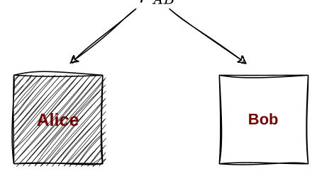
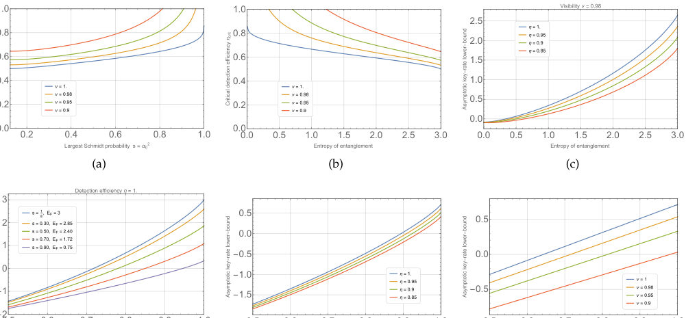
Summary. This paper analyzes One-sided-Device-Independent Quantum Key Distribution (1SDI-QKD) protocols, addressing vulnerabilities in current QKD systems. It proves that a secure key can be extracted using any pure bipartite entangled state, even when the state is nearly separable. The analysis provides explicit bounds on the key rate based on realistic parameters like detector efficiency and state visibility.
Why it may be interesting. This work provides rigorous, resource-efficient protocols for quantum communication, showing that high-quality entanglement is not a prerequisite for secure key generation, which is crucial for practical quantum network deployment.
Main problem. To develop Quantum Key Distribution (QKD) protocols secure against attacks when one measurement device is untrusted (1SDI-QKD).
Main result. A secure key can be obtained using any pure bipartite entangled state in the 1SDI setup, and the key rate is robust even for states that are almost separable.
Method. The security analysis involves deriving lower bounds on the key rate using information-theoretic measures, such as the Devetak-Winter rate, applied to the joint statistics of measurement outcomes.
Model / system. The model is the One-sided-Device-Independent (1SDI) QKD scenario, where an untrusted source distributes a bipartite state $ ho_{AB}$ between an untrusted Alice and a trusted Bob. Security relies on quantum steering.
Key observables. Key Rate ($r_\infty$), Conditional Entropies ($H(B|E)$), Detection Efficiency ($\eta$), and Visibility ($ u$).
Important parameters / regimes. Detection Efficiency ($\eta$), Visibility ($ u$), and the entanglement structure of the shared pure bipartite state $|\psi(\alpha) angle_{AB}$.
Assumptions / limitations. Bob's measurements are trusted and fully characterized; losses on Bob's side can be ignored using the fair-sampling assumption.
Figures summary. Figures illustrate the 1SDI-QKD setup, showing the dependence of the key rate lower bound and critical detection efficiency ($\eta_{crit}$) on state parameters like visibility ($ u$), entanglement entropy ($E_F$), and detection efficiency ($\eta$).
Paper structure. The paper establishes the 1SDI-QKD framework, derives the key rate lower bound for the noiseless case using arbitrary pure entangled states, and then extends this analysis to realistic scenarios incorporating finite detection efficiency ($\eta$) and state visibility ($ u$).
Quantum Key Distribution (QKD) allows spatially separated parties to establish a secret key among themselves based on quantum principles. While QKD systems are being deployed worldwide, their reliance on trusted measurements makes them vulnerable. Moreover, existing protocols have largely focussed on the qubit cases, and rely on the maximally entangled state, a costly resource to generate. Here, we consider the one-sided-device-independent (1SDI) QKD protocols, where one of the measurement devices is trusted while the other is untrusted. The resource in this scenario is quantum steering, an asymmetric form of quantum nonlocality. This is inspired by a real-world scenario, where the trusted party can be considered to be a bank, or any large organisation that has sufficient resources to protect its systems and validate them, while the users are vulnerable to attacks. We then demonstrate that a secure key can be obtained using any pure bipartite entangled state in this setup. Considering realistic detectors and sources based on current technology, we demonstrate that even states that are almost separable can be used to extract a secure key. Moreover, for every pure entangled bipartite state, we find the critical detection efficiencies and visibility to obtain a secure key.
Authors: Dimitris Chytas, Nithin Raveendran, Bane Vasić
Type: theory · Category: quantum information and computing · PDF: https://arxiv.org/pdf/2610.31877v1
Analysis basis: full PDF text, analyzed in chunks
Topic relevance: quantum measurements 2/5
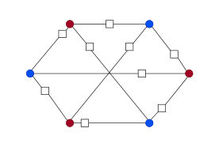
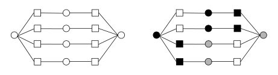
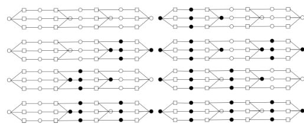
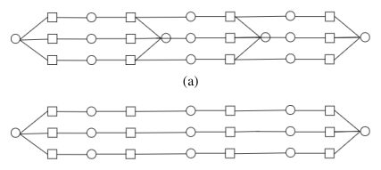
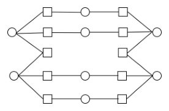
Summary. This paper investigates the performance limits of QLDPC codes when subjected to repeated noisy syndrome measurements, which introduce temporal degeneracy. The authors characterize these degenerate error patterns, showing they cause local failures in standard message-passing decoders. They propose a novel space-time anisotropic decoding technique that overcomes these limitations, demonstrating improved error correction capabilities.
Why it may be interesting. While focused on QEC, the analysis of structured failures due to symmetries (degeneracy) and the development of specialized decoding algorithms are highly relevant to understanding the limitations of quantum information processing in noisy environments.
Main problem. The paper analyzes how temporal degeneracy, introduced by repeated noisy syndrome measurements, limits the performance of message-passing decoding for Quantum Low-Density Parity-Check (QLDPC) codes.
Main result. It constructs degenerate error patterns whose weight depends only on the node degrees, causing local failures in standard isotropic decoders, and proposes a new anisotropic decoding scheme with improved performance.
Method. The authors characterize the temporal kernel, derive counting bounds for degenerate error patterns, and compare the performance of standard min-sum decoding against a novel space-time anisotropic decoding approach.
Model / system. The study uses QLDPC codes to model quantum error correction (QEC) under a phenomenological noise model involving multiple rounds of noisy syndrome measurements.
Key observables. Logical error rates, weight of degenerate error patterns, failure probabilities of decoders.
Important parameters / regimes. Variable-node degree ($d_v$), number of measurement rounds ($r$), blocklength ($n$), and the code's girth.
Assumptions / limitations. The analysis relies on the isolation assumption and assumes the existence of $(d_v, d_c)$-regular parity-check matrices with girth greater than four.
Figures summary. Not specified, but the notes mention figures illustrating a symmetric stabilizer and an example of a temporal codeword.
Paper structure. The paper progresses by characterizing the temporal kernel, deriving combinatorial bounds on degenerate error patterns, proving the failure mechanism for isotropic decoders, and concluding with the proposal and simulation of an improved anisotropic decoding algorithm.
Practical quantum computations can require logical error rates of $10^{-12}$ or lower. Quantum low-density parity-check (QLDPC) codes are promising candidates for reaching such rates with low qubit overhead, provided that their syndromes can be decoded efficiently. Repeated noisy syndrome measurements introduce temporal degeneracy into the space-time decoding graph. We characterize the temporal kernel, whose vectors have zero total data parity, and show that it is generated by elementary temporal codewords of weight $d_v+2$, where $d_v$ is the variable-node degree. For $(d_v,d_c)$-regular parity-check matrices with fixed degrees $d_v,d_c>2$ and girth greater than four, we derive counting bounds and construct degenerate error patterns of weight $(d_v+2)/2$ for even $d_v$ and $d_v+1$ for odd $d_v$, with multiplicity $Θ(nr)$ in the blocklength $n$ and number of measurement rounds $r$. Under the isolation assumption, these patterns cause local failures of deterministic isotropic message-passing decoders under a flooding schedule. These failures depend on the node degrees rather than the minimum distance; for the bivariate bicycle (BB) codes considered, their weight is equal to four. Monte carlo simulations and fixed-weight importance sampling quantify harmful low-weight degenerate error patterns for the min-sum (MS) decoder beyond the isolation assumption. Motivated by the identified symmetries, we propose space-time anisotropic min-sum decoding with syndrome-guided realizations. Its complexity is linear in the number of Tanner graph edges for fixed maximum number of iterations and number of decoders. Numerical results on BB codes show threshold-like behavior acrossthe tested code sizes and improved failure probabilities relative to MS decoding with ordered statistics decoding post-processing.
Authors: Mengyan Qiao, Jian Long, Yu Li, Zhu Cao
Type: theory · Category: quantum information and computing · PDF: https://arxiv.org/pdf/2610.32218v1
Analysis basis: full PDF text, analyzed in chunks
Topic relevance: quantum measurements 2/5
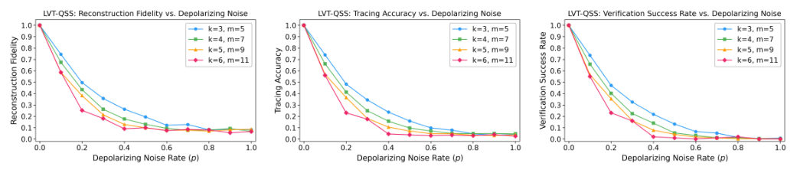
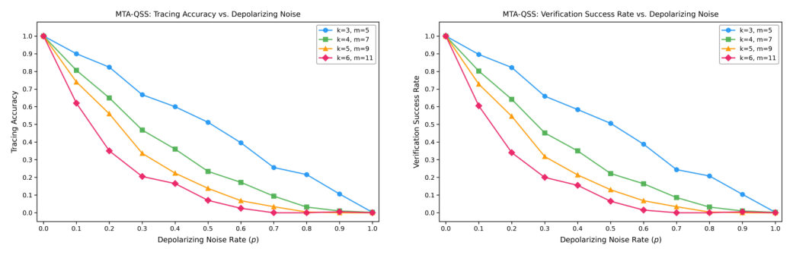
Summary. This paper develops frameworks for traceable and accountable Quantum Secret Sharing (QSS) to address the lack of accountability when shares are leaked or forged. It introduces LVT-QSS and MTA-QSS, providing rigorous security proofs for both leakage-verifiable and malicious-traceable scenarios. The work advances distributed quantum cryptography by embedding accountability into the core security guarantees.
Why it may be interesting. While the focus is on quantum cryptography, the rigorous security proofs involving quantum channels and information leakage are fundamental theoretical tools applicable to analyzing decoherence and information flow in complex quantum systems.
Main problem. Existing Quantum Secret Sharing (QSS) schemes lack intrinsic accountability mechanisms to track leaked or forged shares, which is critical in realistic distributed quantum settings.
Main result. The authors introduce and prove the security of two schemes: LVT-QSS (for leaked shares) and MTA-QSS (for forged shares), successfully incorporating accountability into QSS.
Method. The work involves formulating rigorous security definitions for both leakage and malicious behavior, followed by cryptographic proofs demonstrating that the proposed protocols satisfy these guarantees.
Model / system. The model is a threshold quantum secret sharing scheme protecting a quantum state $|\psi angle$ across $n$ participants. It relies on quantum information theory concepts, including CPTP maps, and cryptographic primitives like post-quantum symmetric-key encryption and quantum-secure hash functions.
Key observables. Traceability advantage ($ ext{Adv}{ ext{trace}}$), distinguishing advantage for secrecy ($ ext{Adv}$).}}$), and non-imputability advantage ($ ext{Adv}_{ ext{ni}
Important parameters / regimes. Threshold parameters ($k, m$), noise model (per-share depolarizing noise), and the security parameter $\lambda$.
Assumptions / limitations. The security proofs rely heavily on the underlying cryptographic hash function ($H$) being quantum-secure collision resistant and preimage resistant.
Paper structure. The paper first establishes the problem gap in QSS accountability. It then details the LVT-QSS scheme, proving its tracer secrecy and traceability. Subsequently, it analyzes the MTA-QSS scheme, proving its security properties, and concludes by comparing the robustness of both protocols.
Quantum secret sharing protects distributed quantum information against unauthorized reconstruction, yet existing schemes provide no intrinsic accountability when shares are leaked or forged. This missing capability is particularly relevant in realistic distributed settings, where compromised participants may either expose valid shares or maliciously interfere with reconstruction. Here we establish a framework for traceable quantum secret sharing under these two threat models. We introduce leakage-verifiable and traceable quantum secret sharing (LVT-QSS), which attributes leaked shares through an explicit leakage verification mechanism, and malicious-traceable and accountable quantum secret sharing (MTA-QSS), which identifies participants who submit forged shares during reconstruction. We formulate security definitions for both settings and prove that the proposed protocols satisfy the corresponding guarantees against the relevant adversaries. Numerical simulations under per-share depolarizing noise further quantify the robustness of the proposed schemes and identify verification as the dominant noise sensitive stage. These results incorporate accountability into quantum secret sharing and provide a foundation for traceable distributed quantum cryptography.
Authors: Antonius Jacobus Hasenack, Boris Škorić
Type: theory · Category: quantum information and computing · PDF: https://arxiv.org/pdf/2610.32823v1
Analysis basis: full PDF text, analyzed in chunks
Topic relevance: Keldysh / 2PI / non-Gaussian methods 1/5 · correlated / nonlocal dissipation 1/5 · driven-dissipative phase transition 1/5 · methods for driven-dissipative 1/5 · non-equilibrium universality 1/5 · quantum measurements 1/5
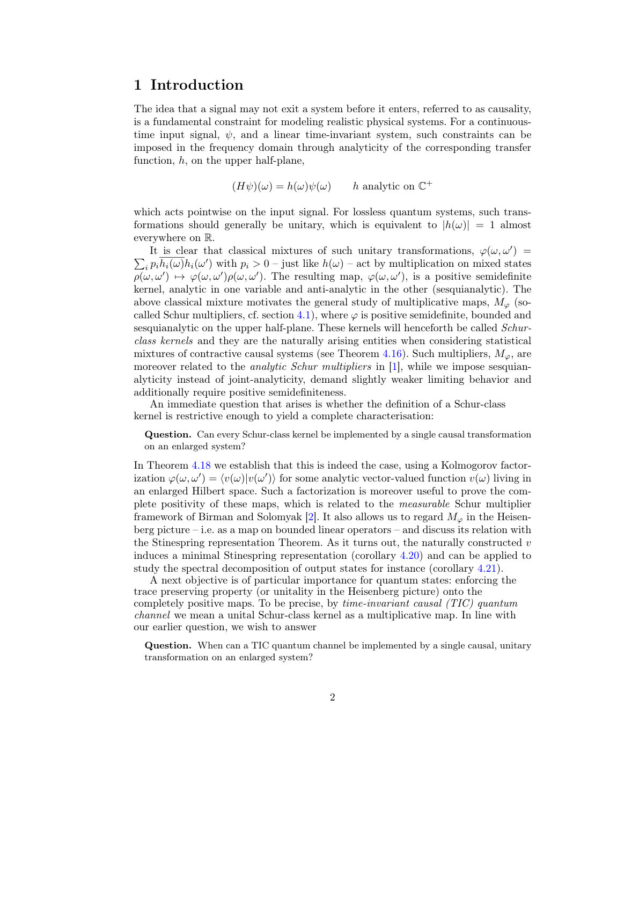
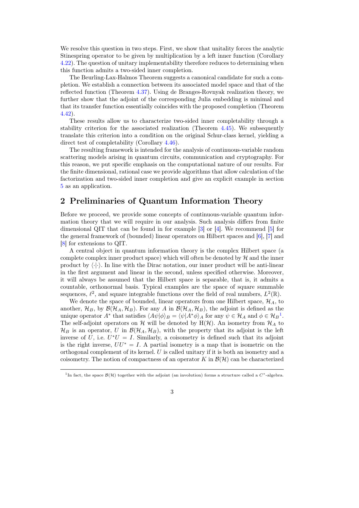
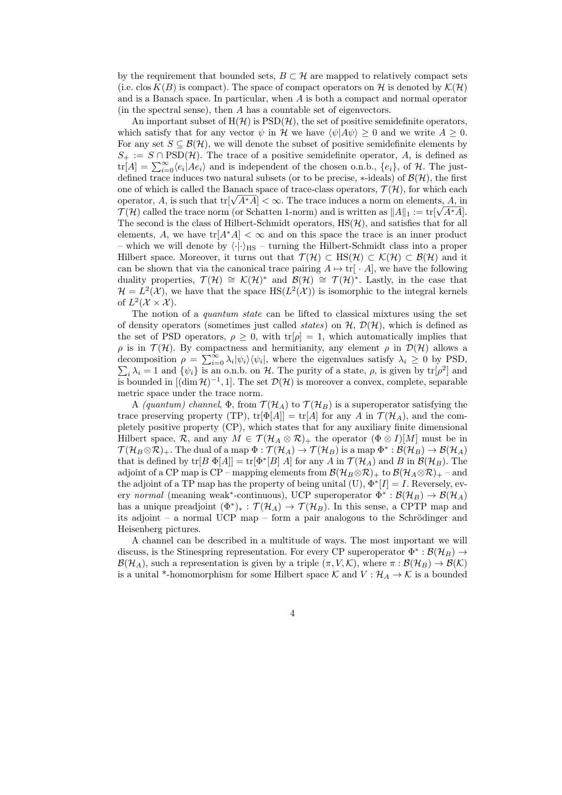
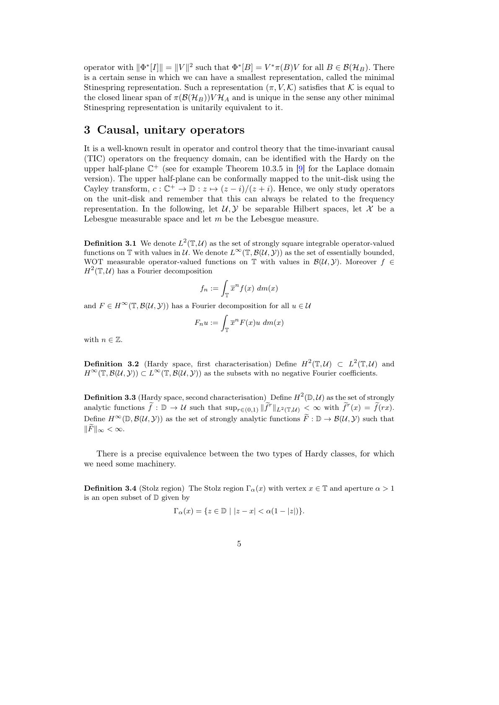
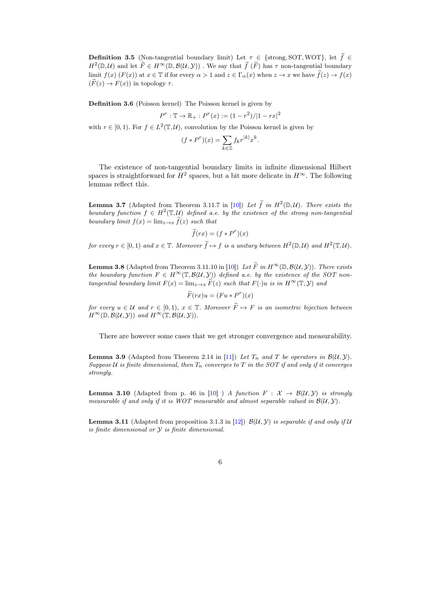
Summary. This paper provides a rigorous mathematical framework for analyzing causal quantum channels in LTI systems. It shows that these channels are characterized by specific positive semidefinite kernels (Schur-class kernels). The core result links the physical requirement of unitary implementation to a deep mathematical property: the existence of a two-sided inner completion for the associated function, providing both a criterion and explicit algorithms for computation.
Why it may be interesting. This work provides deep mathematical tools to analyze physical constraints (like causality) on quantum operations, which is crucial for designing realistic quantum communication protocols or characterizing open quantum systems.
Main problem. The paper studies the mathematical characterization of quantum channels that respect causality in single-input-single-output linear time-invariant (LTI) quantum systems.
Main result. It establishes that the existence of a unitary implementation for such a channel is equivalent to the associated Schur-class kernel admitting a minimal two-sided inner completion.
Method. The analysis heavily employs advanced functional analysis, including Schur-class kernels, de Branges-Rovnyak realization theory, and techniques from Hardy space theory.
Model / system. The model is a quantum channel $\Phi: T(\mathcal{H}_A) o T(\mathcal{H}_B)$ acting on trace-class operators, analyzed in the context of time-invariant, causal systems.
Key observables. Output rank of pure-state inputs, the characteristic function of the associated embedding, and the existence of two-sided inner completions.
Important parameters / regimes. Causality (analyticity in the upper half-plane), Unitality ($\Phi^*[I] = I$), and the McMillan degree (for explicit algorithms).
Assumptions / limitations. The analysis assumes the system can be modeled by positive semidefinite kernels (Schur-class kernels) and relies on the structure provided by the Moore-Aronszajn and de Branges-Rovnyak theorems.
Figures summary. Not specified (The notes detail mathematical algorithms and theoretical results rather than figure descriptions).
Paper structure. The paper progresses from defining the physical problem (causal quantum channels) to mapping it onto mathematical structures (Schur-class kernels/multipliers). It then uses advanced function theory (Hardy spaces, RKHS) to derive necessary and sufficient conditions for unitary implementation, culminating in explicit computational algorithms.
In this work, we study quantum channels that respect causality in single-input-single-output linear time-invariant systems. We show that positive semidefinite kernels satisfying certain analyticity constraints, which we call Schur-class kernels, provide a suitable description of such channels through multiplicative maps (Schur multipliers). Using the Moore-Aronszajn Theorem, we establish that these multipliers admit a minimal analytic Stinespring representation, which, in the unital case, is given by multiplication by a left inner function. We then relate the output rank of pure-state inputs to the dimension of the associated reproducing kernel Hilbert space. Using de Branges-Rovnyak realizations, we derive a stability criterion for the existence of two-sided inner completions of these vector-valued functions. We further show that the adjoint of the Julia embedding associated with the realization is minimal, and that its characteristic function essentially coincides with the canonical two-sided inner completion suggested by the Beurling-Lax-Halmos Theorem. Finally, we provide algorithms for explicitly computing minimal two-sided inner completions in the case of finite McMillan degree.
Authors: S. Archana, Aditi Das, Venkat Abhignan, R. Muthuganesan
Type: both · Category: quantum information and computing · PDF: https://arxiv.org/pdf/2610.32049v1
Analysis basis: full PDF text, analyzed in chunks
Topic relevance: correlated / nonlocal dissipation 1/5 · driven-dissipative phase transition 1/5 · methods for driven-dissipative 1/5
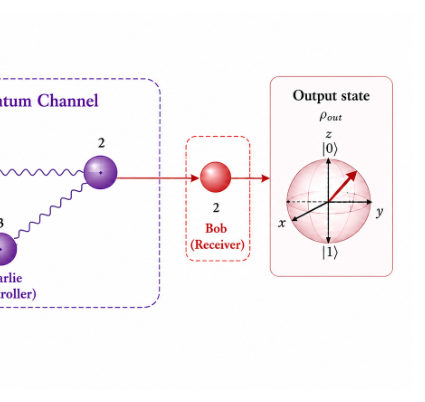
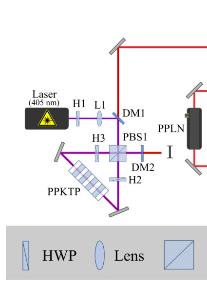
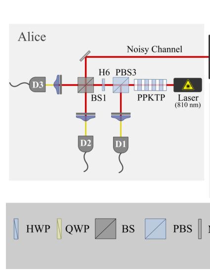
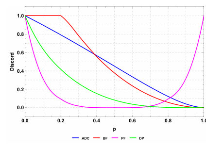
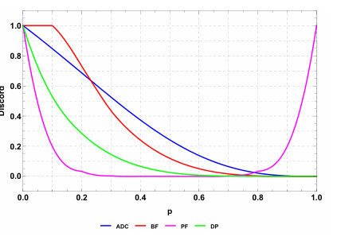
Summary. This work analyzes the resilience of quantum resources, specifically the GHZ state, used in controlled quantum teleportation under various noise models. By comparing multipartite discord, entanglement, and CQT fidelity, the authors show that these measures reveal distinct aspects of robustness. The findings emphasize that operational performance, measured by fidelity, is key to assessing practical quantum advantage.
Why it may be interesting. The detailed comparison between different correlation measures (discord vs. entanglement) and the operational fidelity provides crucial guidelines for designing robust quantum communication protocols in realistic noisy environments.
Main problem. The paper investigates how the performance of controlled quantum teleportation (CQT) and the utility of quantum resources degrade when subjected to various types of noise.
Main result. It demonstrates that different quantum correlation measures (discord, concurrence, entanglement) exhibit distinct robustness profiles, and that operational fidelity (CQT fidelity) is a more reliable indicator of resource usefulness than entanglement measures alone.
Method. The study uses the Kraus-operator formalism to model noisy evolution on a three-qubit GHZ state and compares the resulting state using multiple quantum correlation diagnostics.
Model / system. The core system is the three-qubit GHZ state used as a resource for the Controlled Quantum Teleportation (CQT) protocol, analyzed under bit-flip, phase-flip, depolarizing, and amplitude-damping noise.
Key observables. Multipartite quantum discord, Genuine multipartite concurrence (GMC), Localizable entanglement (LE), and CQT fidelity.
Important parameters / regimes. Noise strength parameters (e.g., $p$), and the comparison against the classical threshold ($2/3$).
Assumptions / limitations. The analysis assumes the applicability of the Kraus-operator formalism to model the noisy channels and that the CQT protocol structure remains valid.
Figures summary. Figures illustrate the schematic flow of the CQT protocol and show the dependence of CQT fidelity on noise strength for different noise configurations.
Paper structure. The paper first introduces the CQT protocol and the noisy GHZ resource. It then analyzes the resource robustness using various correlation measures, culminating in a comparison showing the operational relevance of LE versus the mathematical persistence of discord.
In distributed quantum computing, quantum networks provide a potential infrastructure for long-range quantum information processing. Controlled quantum teleportation (CQT) is a key practically relevant protocol that can connect two parties on a network and enables a third party, the controller to allow or abort the secure teleportation of an arbitrary single-qubit state between the two parties. We investigate the robustness of a three-qubit GHZ resource under bit-flip, phase-flip, depolarizing, and amplitude-damping noise. Using the Kraus-operator formalism, we characterize the noisy resource through multipartite quantum discord, genuine multipartite concurrence (GMC), localizable entanglement (LE), and CQT fidelity. We also outline a proof-of-concept photonic implementation for preparing the three-qubit GHZ resource and realizing the CQT protocol, which could enable experimental investigation of the effects of noise. Our results show that bit-flip and amplitude-damping noise generally preserve useful mutipartite quantum correlations over broader noise parameter ranges. Interestingly, multipartite discord exhibits freezing under bit-flip noise over a finite parameter regime. Moreover, discord can persist beyond the sudden death of genuine multipartite entanglement, revealing the distinct robustness of nonclassical correlations. We further demonstrate that CQT fidelity which characterizes the performance of CQT can exceed the classical threshold even after GMC vanishes, while LE more closely reflects the operational usefulness of the noisy resource. These findings highlight the complementary roles of quantum correlations and entanglement in assessing the resilience of GHZ-based protocols.
Authors: Pooya Abdollahi, Woo Jin Kim, Keaghan Knight, Harold Y. Hwang, Ambrose Seo
Type: experiment · Category: statistical mechanics · PDF: https://arxiv.org/pdf/2610.31871v1
Analysis basis: full PDF text, analyzed in chunks
Topic relevance: driven-dissipative phase transition 1/5 · non-equilibrium universality 1/5 · quantum measurements 1/5
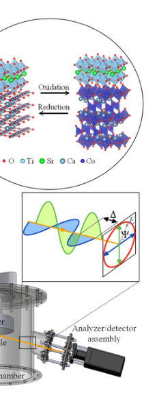
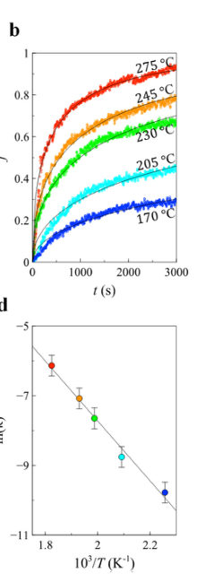
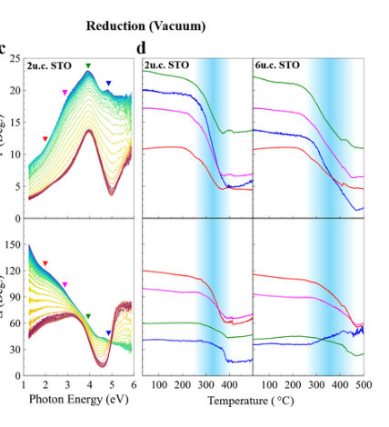
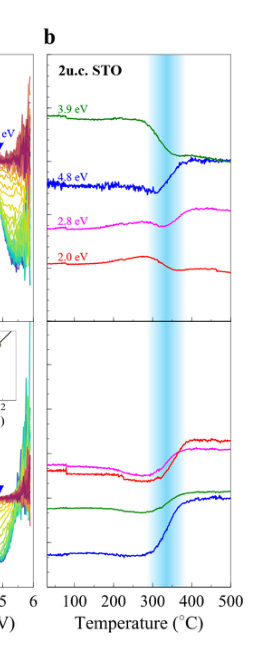
Summary. This work demonstrates that ultrathin SrTiO3 capping layers act as kinetic regulators for redox phase transitions in oxide heterostructures. By monitoring the process in situ using ellipsometry, the authors prove that oxygen diffusion through the capping layer is the rate-limiting step. This provides a general framework for engineering the kinetics of phase changes in complex oxides by tuning layer thickness or oxygen pressure.
Why it may be interesting. The quantitative determination of an activation energy for diffusion through a nanoscale oxide layer provides a general, tunable kinetic gate mechanism applicable to understanding rate-limited processes in complex condensed matter systems.
Main problem. To investigate the role of oxide capping layers in governing the kinetics of redox phase transitions in oxide heterostructures, moving beyond their conventional role in mere protection.
Main result. The capping layer fundamentally alters the phase transition mechanism from interface-controlled to diffusion-controlled, establishing the capping layer as an active kinetic regulator.
Method. Real-time in situ optical spectroscopic ellipsometry was used to monitor the oxidation process, followed by kinetic analysis using the JMAK model and Arrhenius analysis.
Model / system. The study examines oxide thin films, specifically CaCoO2+delta, capped with few-nanometer-thick SrTiO3 (STO) layers, subjected to controlled oxidation/reduction environments.
Key observables. Ellipsometric angles (Psi and Delta), the fraction of oxidation (f(t)), and the activation energy (E_A) for oxygen diffusion.
Important parameters / regimes. Capping layer thickness (2 u.c. vs 6 u.c.), oxygen partial pressure (500 Torr vs 50 Torr), and temperature.
Assumptions / limitations. The phase transition follows a diffusion-controlled mechanism governed by oxygen diffusion through the STO layer, and the JMAK model is applicable.
Figures summary. Figures show the time evolution of ellipsometric spectra during oxidation, comparisons of kinetic parameters for capped vs. uncapped films, and Arrhenius plots used to determine the activation energy.
Paper structure. The paper establishes the problem of kinetic control, presents the experimental setup and methodology (ellipsometry, JMAK, Arrhenius), demonstrates the shift in kinetic control due to the capping layer, and quantifies the rate-limiting step via the activation energy.
Oxide capping layers are widely used to protect and stabilize thin-film heterostructures, yet their role in governing phase-transition kinetics remains largely unexplored. Here, we uncover the kinetic function of few-nanometer-thick SrTiO$_3$ (STO) capping layers in controlling oxidation and reduction processes, using real-time in situ optical spectroscopic ellipsometry. We show that oxygen diffusion through the nanoscale capping layer constitutes the rate-limiting step, giving rise to diffusion-controlled phase transitions in the underlying materials. As a result, both capping-layer thickness and oxygen partial pressure provide effective handles to tune phase transition temperatures. Quantitative analysis yields an activation energy of $E_A$ = 0.64 $\pm$0.06 eV for oxygen diffusion through STO, highlighting its suitability for precise control of redox reactions in diverse material systems. These results establish oxide capping layers as active kinetic regulators of redox-driven phase transitions and offer a general framework for engineering redox dynamics in complex oxide heterostructures.
Authors: A. A. Shchepkin, D. V. Karlovets
Type: theory · Category: other · PDF: https://arxiv.org/pdf/2610.32121v1
Analysis basis: full PDF text, analyzed in chunks
Topic relevance: interference shaping light 1/5 · quantum measurements 1/5
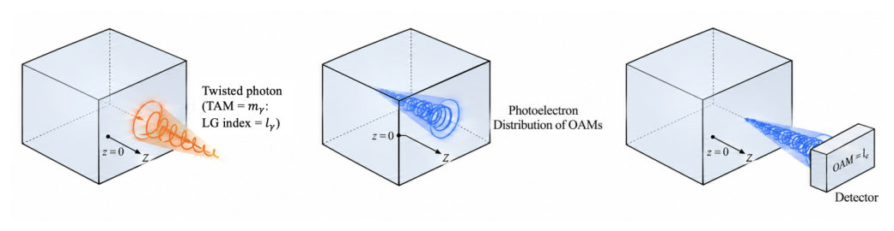
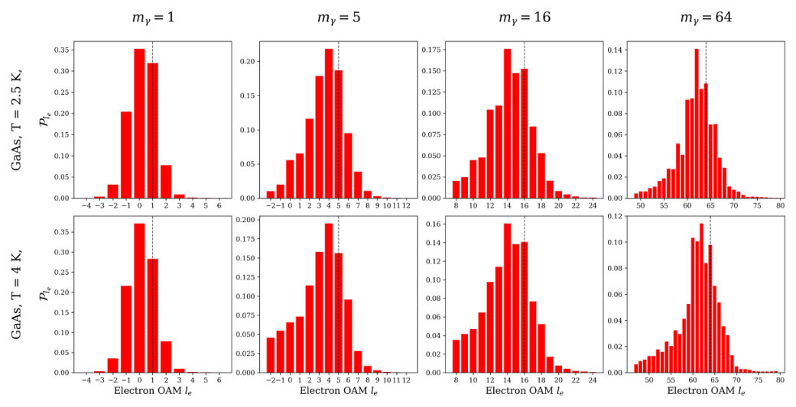
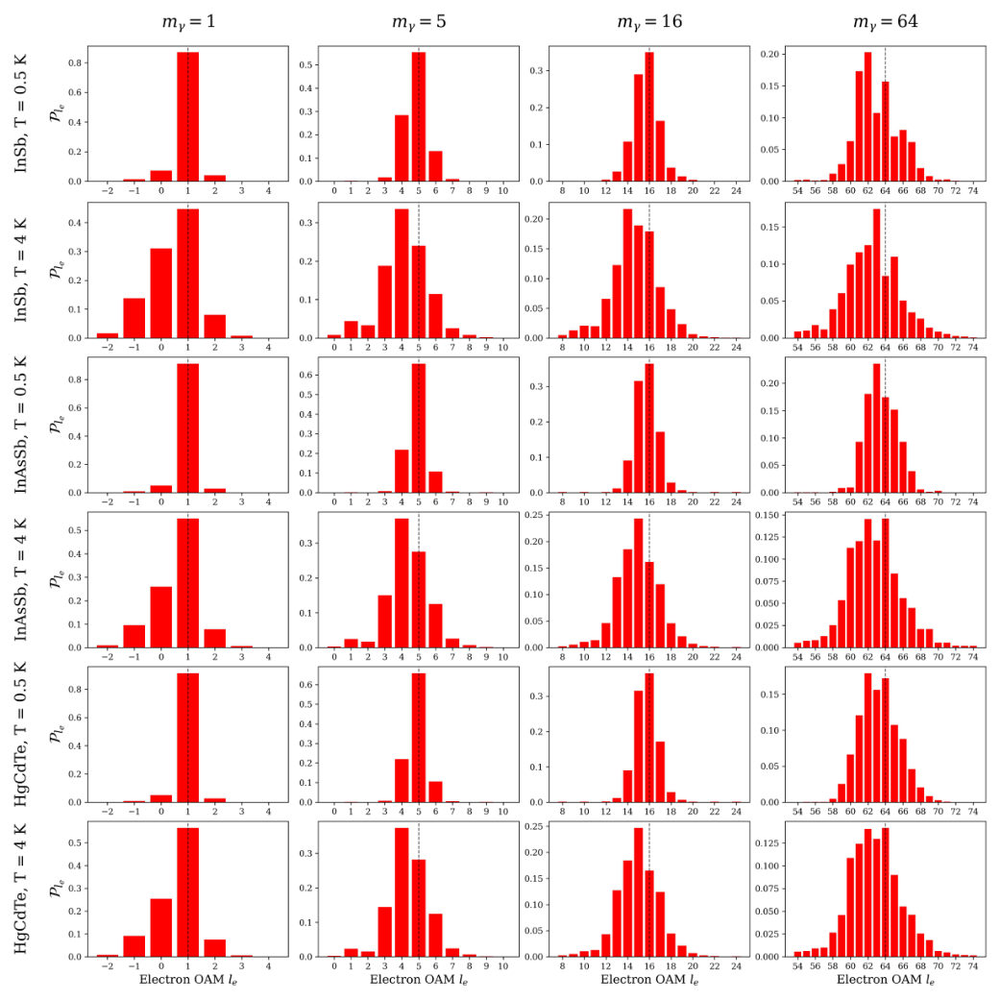
Summary. This paper theoretically analyzes the conditions required for transferring the angular momentum carried by twisted photons into the orbital angular momentum of emitted photoelectrons from semiconductor surfaces. By calculating OAM-resolved spectra for several materials, the authors determined that low effective mass and shallow donor levels are crucial for efficient transfer. The findings guide the selection of optimal semiconductor materials for generating highly controlled electron angular momentum states.
Why it may be interesting. This work bridges quantum optics (twisted photons) with condensed matter physics (semiconductor photoemission), providing quantitative criteria for controlling electron angular momentum, which is relevant for advanced quantum sources and detectors.
Main problem. The study investigates the material requirements necessary for efficiently transferring the total-angular-momentum (TAM) projection from a twisted photon to the orbital angular momentum (OAM) of an emitted photoelectron.
Main result. Efficient OAM transfer is favored in materials with small conduction-band effective masses and shallow donor levels, while GaAs was found to be less favorable due to its larger effective mass and deeper donor levels.
Method. The authors calculated OAM-resolved photoemission spectra using a single-valley effective-mass model for surface photoemission.
Model / system. The system involves photoemission from n-type semiconductor surfaces (e.g., GaAs, InSb) irradiated by twisted photons, modeled using a single-electron Hamiltonian and projected onto Bessel states.
Key observables. Mean electron OAM, root-mean-squared (rms) OAM width, and the fraction of electrons matching the photon's TAM projection ($\eta_m$).
Important parameters / regimes. Low temperatures, small conduction-band effective masses, and shallow donor levels are critical for efficient transfer.
Assumptions / limitations. The model neglects electron-electron, electron-phonon, and electron-impurity interactions, and assumes a flat, defect-free interface.
Figures summary. Figure 1 illustrates the geometry of the surface photoelectric effect, showing the semiconductor in the negative z-region and emission into the vacuum.
Paper structure. The paper establishes the physical problem, details the theoretical model and calculations for various semiconductors, analyzes the dependence of OAM transfer on material parameters, and discusses future extensions to Dirac/Weyl semimetals.
We study the material requirements for transferring the total-angular-momentum (TAM) projection of a twisted photon to the orbital angular momentum (OAM) of a photoelectron emitted from an $n$-type semiconductor surface. Within a single-valley effective-mass model of surface photoemission, we calculate OAM-resolved spectra for GaAs, InSb, $\mathrm{InAs}_{0.34}\mathrm{Sb}_{0.66}$, and $\mathrm{Hg}_{0.76}\mathrm{Cd}_{0.24}\mathrm{Te}$ irradiated by twisted photons with Laguerre--Gaussian--like momentum profile. The OAM transfer is characterized by the mean electron OAM, its root-mean-squared width, and the fraction of electrons with OAM-projection equal to the photon TAM-projection. Efficient transfer requires the transverse momentum of the conduction electron to be much smaller than the transverse momentum width of the photon, which favors low temperatures, small conduction-band effective masses, and shallow donor levels. GaAs is less favorable within the present model because of its larger effective mass and deeper donor levels. We also discuss the demanding photon-wave packet parameters, possible extensions to Dirac and Weyl semimetals, and post-emission OAM selection. Although the generation of vortex electrons with a vanishing OAM uncertainty via photoemission seems challenging, we argue that it is still possible to generate single-electron vortex states with a finite OAM dispersion.
Authors: Yatin Dandi, Matteo Vilucchio, Hugo Tabanelli, Florent Krzakala
Type: both · Category: disordered systems and neural networks · PDF: https://arxiv.org/pdf/2610.32849v1
Analysis basis: full PDF text, analyzed in chunks
Topic relevance: analog quantum simulation 1/5 · quantum measurements 1/5




Summary. This paper extends feature learning in deep neural networks by introducing Backward Coupling (BackLoFi), which models the feedback effect where upper layers refine lower-layer representations. By analyzing the spectral dynamics of backpropagation gradients, the authors show that this coupling mechanism significantly boosts performance over standard layer-wise methods. The work provides a rigorous, mathematically grounded approach to understanding cross-layer feature extraction.
Why it may be interesting. The mathematical framework of analyzing weight covariance and singular modes in deep learning mirrors techniques used in analyzing complex physical systems, such as those involving correlated states or spectral decompositions in quantum many-body physics.
Main problem. The paper addresses the limitation of purely layer-wise feature learning in deep neural networks by developing a mechanism to capture the feedback interaction between upper and lower layers during joint training.
Main result. The proposed Backward Coupling (BackLoFi) algorithm significantly improves feature learning accuracy over standard forward methods, demonstrating that upper-layer sensitivities can generate effective labels for refining lower-layer spectral features.
Method. It derives a backward-coupling algorithm by analyzing the exact backpropagation gradients, which leads to amplifying singular modes of a cross-layer correlation operator.
Model / system. The model is a deep neural network trained via backpropagation, analyzed using fully connected and convolutional layers on CIFAR-10 data. The core mechanism involves coupling the incoming weights (rows) of a layer to the outgoing weights (columns) of the next layer.
Key observables. Improved test accuracy on CIFAR-10, the singular modes of the cross-layer correlation operator, and the fraction of new read/write directions lying within the span of previously installed features.
Important parameters / regimes. The coupling strength, the number of passes ($P$), the rank fraction ($r_\ell/k_\ell$), and the learning rate/damping factor ($\alpha$).
Assumptions / limitations. The analysis relies on a controlled small-initialization regime, and certain updates involve approximations regarding fixed surrounding layers or linear activations.
Figures summary. Figures compare the test error of BackLoFi against Forward LoFi and standard Gradient Descent (GD) across varying passes and network sizes, showing BackLoFi's superior performance. Other figures illustrate the selection of feature directions within the span of previous updates.
Paper structure. The paper first introduces the problem of cross-layer interaction, derives the BackLoFi algorithm based on spectral analysis of backpropagation gradients, provides theoretical derivations for small-layer networks, and concludes with extensive experiments comparing BackLoFi, Forward LoFi, and GD on CIFAR-10.
During joint training, backpropagation allows later layers to reshape earlier representations, a feedback mechanism absent from purely layer-wise learning. We extend Neural Low-Degree Filtering (Neural LoFi), a recently proposed layer-wise spectral surrogate for feature learning, to capture this interaction. Starting from the exact backpropagation gradients, we derive a local coupling between a neuron's incoming weights and its corresponding next-layer column. In a controlled small-initialization regime with smooth activations and fixed surroundings, these dynamics amplify singular modes of a cross-layer correlation operator. Each growing mode pairs an earlier feature with an upper-layer response through shared neuron coefficients. This motivates a backward-coupling algorithm in which upper-layer sensitivities generate sample-dependent effective labels for earlier spectral steps, while corrected features refine upward transmission. A function-space variational principle characterizes the selected feature-response pairs by maximizing the label correlation of their product under kernel-norm constraints. For three-layer networks, we derive self-consistent continuous-time dynamics for the filtered hidden-layer features, the activation kernels, and the network output under the proposed backward coupling. In a hierarchical multi-index model, we establish a feature-recovery separation: backward coupling recovers lower-layer directions invisible to the original forward label-weighted statistic. The linear specialization recovers residual-dependent singular-mode dynamics, while paired modes provide a dynamical mechanism for linked low-rank covariance components consistent with the rainbow-network picture. Experiments with fully connected and convolutional networks on binary CIFAR-10 show improved accuracy over forward Neural LoFi at matched widths.
Authors: Peter T. J. Bradshaw, Jonte R. Hance
Type: theory · Category: other · PDF: https://arxiv.org/pdf/2610.32659v1
Analysis basis: full PDF text, analyzed in chunks
Topic relevance: analog quantum simulation 1/5
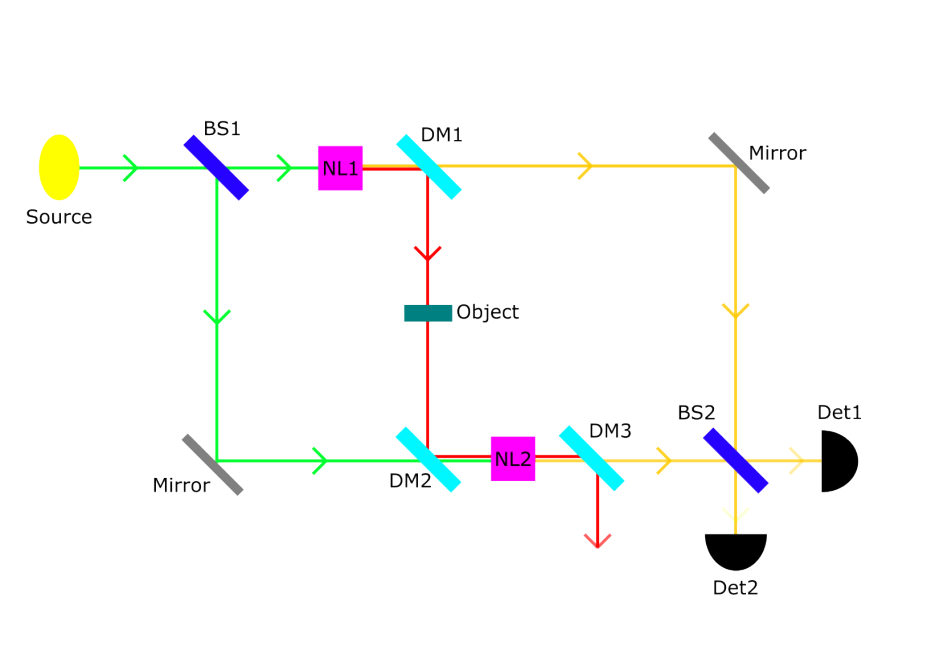
Summary. This paper serves as an introduction to analyzing quantum systems using algebraic methods, emphasizing that the underlying symmetry structure is key to understanding physics. It demonstrates this by successfully deriving the energy spectrum of the harmonic oscillator using multiple algebraic techniques, confirming the power of group theory over direct differential equation solving.
Why it may be interesting. This work is highly relevant as it provides a unifying mathematical perspective, showing how symmetry principles (Lie algebras) can bypass complex differential equation solving, a core theme in advanced quantum theory.
Main problem. To demonstrate the fundamental importance of the underlying algebraic structure (symmetry) in quantum mechanics, showing how it can solve problems without resorting to solving differential equations.
Main result. The energy spectra of various systems, such as the harmonic oscillator, are consistently derived and confirmed using multiple, mathematically distinct algebraic frameworks (e.g., ladder operators, $\mathfrak{su}(1,1)$ algebra).
Method. The paper employs an algebraic approach, analyzing physical systems by identifying and utilizing the commutation and anti-commutation relations between operators, particularly focusing on Lie algebras.
Model / system. The analysis covers fundamental quantum systems including the harmonic oscillator, the hydrogenic atom, particle spin, and optical components. The mathematical tools involve canonical commutation relations, bosonic/fermionic statistics, and specific Lie algebras like $\mathfrak{so}(2,1)$ and $\mathfrak{su}(2)$.
Key observables. Energy eigenvalues ($E$), quantum numbers ($n, n_j$), and the structure of the spectrum-generating algebra.
Important parameters / regimes. The dimensionality ($D$) of the system, and fundamental constants like $\hbar$ and $\omega$.
Assumptions / limitations. The central assumption is that the physical behavior of a quantum system is entirely determined by its underlying algebraic symmetries, which can often be found even if the Hamiltonian is complex.
Paper structure. The paper progresses by introducing the general concept of algebraic analysis, applying it to simple models like the harmonic oscillator (using ladder operators and $\mathfrak{su}(1,1)$), and then generalizing the concept to spin and other physical systems, culminating in a review of active research areas.
In this paper, we present various well-studied examples of quantum systems, and discuss how they might be analysed algebraically. We analyse the harmonic oscillator, hydrogenic atom, optical components, and particle spin using multiple algebraic methods, and highlight the central importance of algebraic relationships between operators in determining the physical character of the system. In particular, we show: the ubiquity of the Lie algebra $\mathfrak{so}(2,1)\cong\mathfrak{su}(1,1)$ as the ``spectrum generating algebra''; the role of $\mathfrak{su}(2)$ and $\mathfrak{su}(1,1)$ in determining the action of optical components; that an elementary algebraic approach to particle spin offers novel insights into its nature versus the usual approaches; and how understanding the full (often hidden) symmetry of a problem enables it to be solved immediately without the need to solve differential equations. We hope this work will serve as a gentle introduction to algebraic methods in quantum mechanics for the interested reader --- we therefore signpost active areas of research within the community.
Authors: Chayan Patra, Prayas Ghosh, Adwait Patkhedkar, Rahul Maitra
Type: theory · Category: strongly correlated electrons · PDF: https://arxiv.org/pdf/2610.32968v1
Analysis basis: full PDF text, analyzed in chunks
Topic relevance: analog quantum simulation 1/5
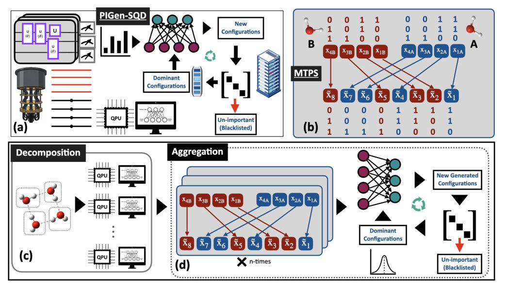
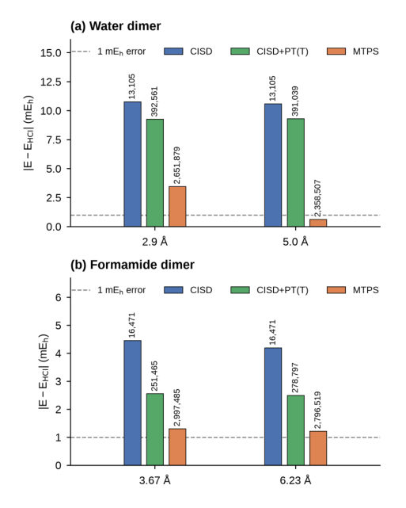
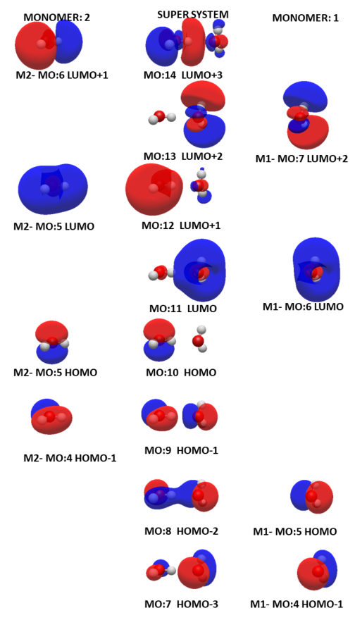
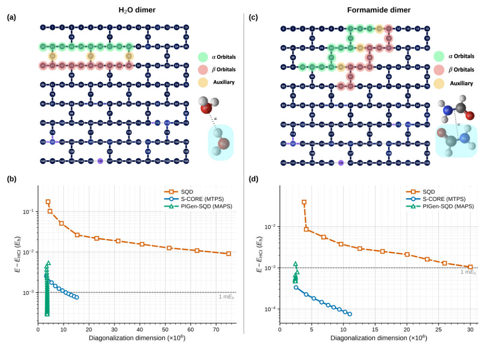
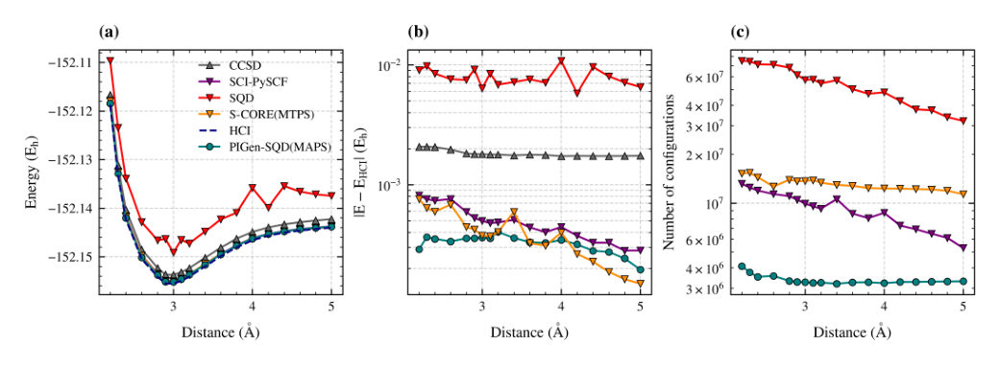
Summary. This paper presents a novel, scalable Quantum-Centric Supercomputing framework to solve electronic structure problems for large molecules. It decomposes the complex problem into smaller, manageable fragments solved by a generative ML solver, which then reconstructs the global solution. This significantly reduces computational complexity and improves energy accuracy over existing quantum methods.
Why it may be interesting. This work directly tackles the scaling problem in quantum chemistry by combining quantum hardware simulation with advanced ML-driven decomposition techniques, which is crucial for simulating complex molecular interactions beyond current computational limits.
Main problem. Accurately solving the electronic structure of large molecular systems with strong electronic correlation effects, which is computationally prohibitive for classical methods and limited by current quantum hardware.
Main result. The proposed framework achieves up to a 95% reduction in the diagonalization dimension and enhances energy accuracy by an order of magnitude compared to conventional quantum diagonalization methods for molecular dimers.
Method. A distributed Quantum-Centric Supercomputing (QCSC) framework that decomposes the problem into smaller fragments, solved using a physics-informed generative machine learning solver (PIGen-SQD), followed by a two-step aggregation scheme.
Model / system. The study focuses on molecular systems like water and formamide dimers, and the water hexamer, modeled by fermionic Hamiltonians ($\hat{H}$). The approach maps these fermionic problems onto qubits for quantum computation.
Key observables. Energy eigenvalues, diagonalization dimension, and energy accuracy.
Important parameters / regimes. Qubit count (e.g., 120-qubit problem decomposed into six 20-qubit subsystems), shot budget, and correlation strength.
Assumptions / limitations. The method relies on decomposing the Hamiltonian into local, solvable fragments and assumes that the resulting Mapped Tensor Product State (MTPS) provides a good approximation of the global ground state.
Figures summary. Not specified (The notes detail the structure and results rather than describing specific figures).
Paper structure. The paper introduces the limitations of standard QCSC, proposes the distributed framework, details the two-step aggregation (MTPS construction and correlation recovery), and validates the method on molecular dimers and the water hexamer.
Quantum-centric supercomputing (QCSC) approaches, such as sample-based quantum diagonalization (SQD), combine quantum processors with high-performance computers (HPC), offering a promising route toward solving challenging electronic structure problems. However, implementation of QCSC approaches to large active space calculations is constrained by the associated number of qubits, deep quantum circuits, sampling cost, and large-scale Hamiltonian diagonalization. To overcome these limitations, we introduce a distributed QCSC framework that decomposes complex molecular problems into parallel sub-problems requiring fewer qubits, shallower circuits, and reduced shot budgets. A physically motivated, two-step aggregation scheme then reconstructs the global solution: first, a computational bit assignment strategy optimizes a cost function to appropriately map local bit indices to global ones, yielding a mapped tensor product state (MTPS); second, an inter-fragment correlation recovery module restores missing cross-fragment interactions. Herein, we employ a multi-layered generative machine learning architecture, starting with utilizing the recently proposed physics-informed generative SQD (PIGen-SQD) as a distributed QCSC solver, followed by a secondary generative module to model configuration distributions and identify dominant sectors of the global Hilbert space. For water and formamide dimers, our method achieves up to $95\%$ reduction in the diagonalization dimension while enhancing energy accuracy by an order of magnitude over conventional SQD. Furthermore, application to the water hexamer ($\mathrm{(H_2O)_6}$) cage successfully decomposes a 120-qubit problem into six 20-qubit monomeric subsystems, and stitches the monomers under a dimeric approximation, demonstrating excellent agreement with the reference classical methods.
Authors: Giorgio Ciliberto, Frédéric Grosshans
Type: theory · Category: quantum information and computing · PDF: https://arxiv.org/pdf/2610.31933v1
Analysis basis: full PDF text, analyzed in chunks
Topic relevance: analog quantum simulation 1/5
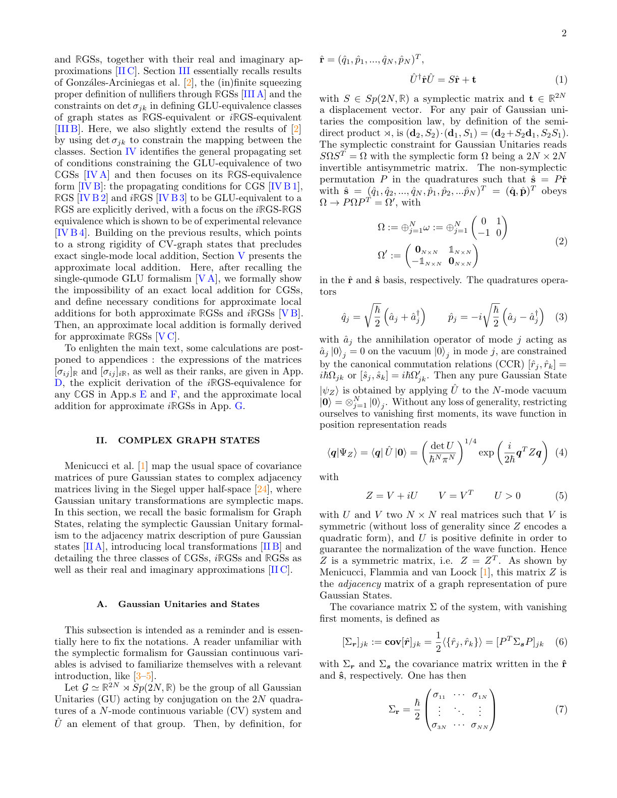
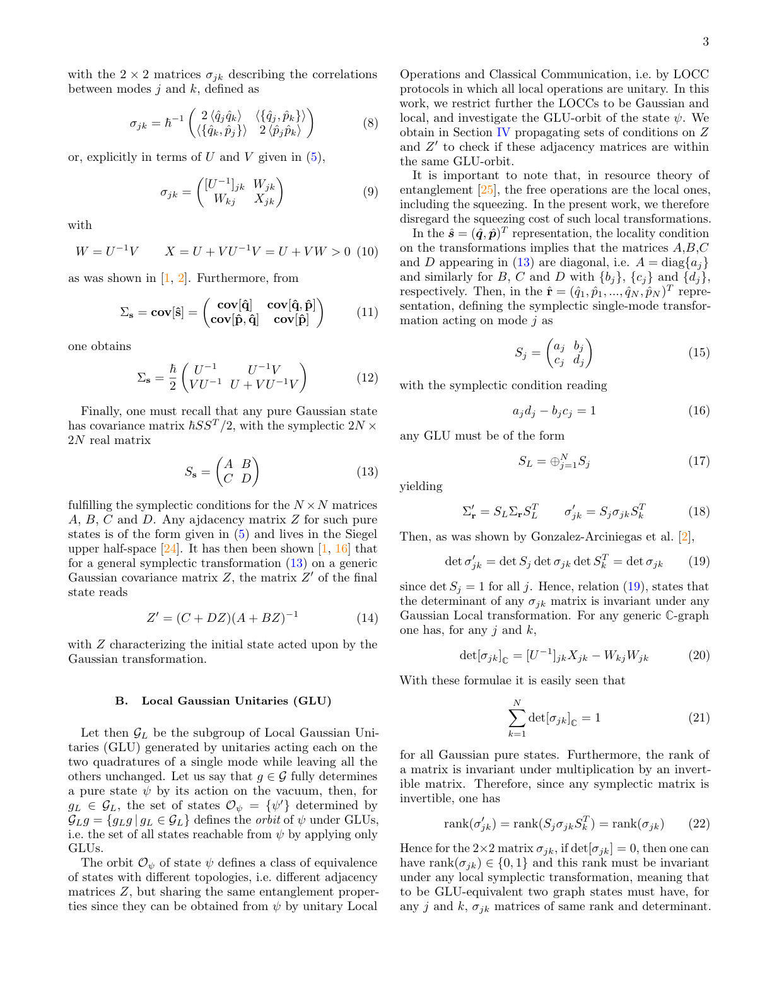
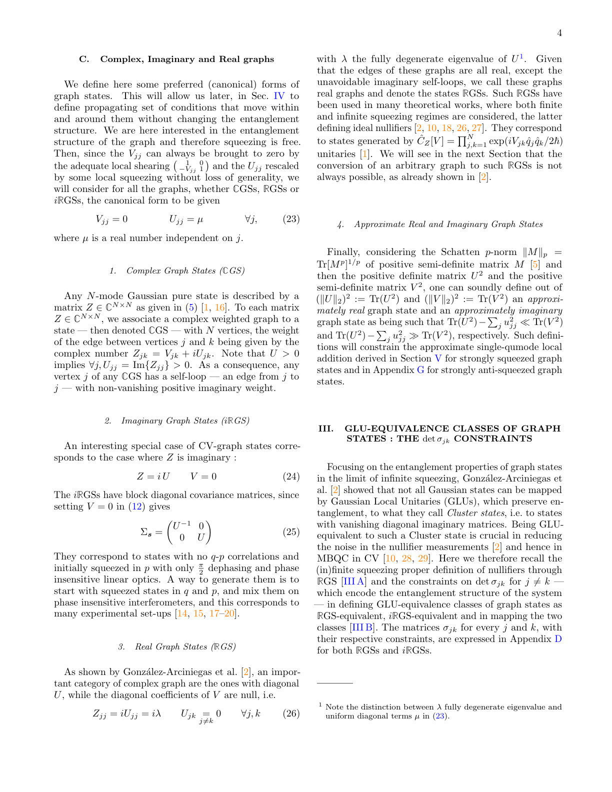
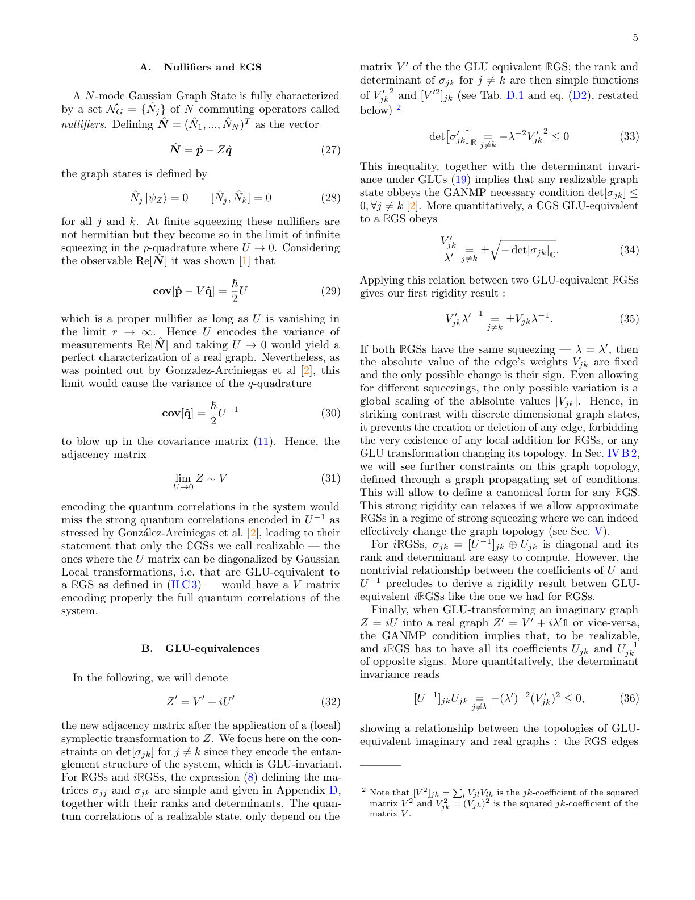
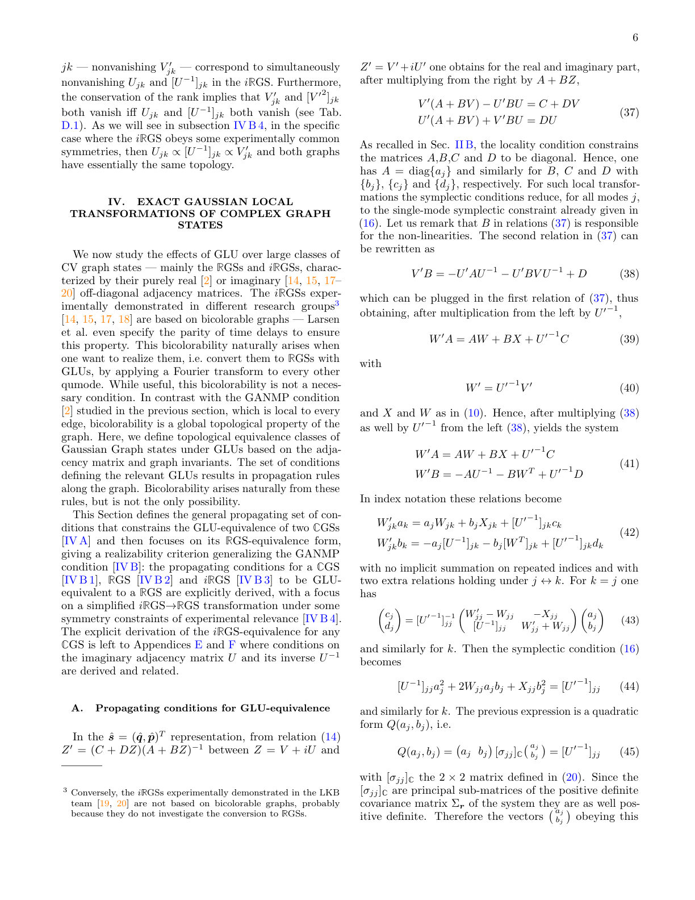
Summary. This theoretical paper investigates the structural rigidity of continuous variable graph states (CGSs) under local Gaussian transformations. It develops a set of necessary conditions to determine if one state can be transformed into another, particularly comparing imaginary and real graph states. The key finding is that these graph states are highly rigid, precluding exact local additions analogous to those in qubit systems.
Why it may be interesting. This work provides deep structural constraints on entanglement resources (Gaussian states) used in quantum computation, showing fundamental limitations on local operations that are crucial for designing robust quantum protocols.
Main problem. The paper establishes an equivalence criterion for generic Complex Graph States (CGSs) under Gaussian Local Unitary (GLU) transformations, focusing on the conversion between purely imaginary (iRGSs) and real (RGSs) graph states.
Main result. The topologies of iRGSs and RGSs are shown to be too rigid to admit any exact qumode local-addition analogue, though an approximate version exists in the strongly squeezed regime.
Method. The analysis uses the symplectic formalism to derive a 'graph propagating set of conditions' that must be satisfied for two CGSs to be convertible via a GLU.
Model / system. The system involves multimode entangled pure Gaussian states, mathematically described by complex adjacency matrices (CGSs), which include the purely imaginary (iRGSs) and real (RGSs) variants.
Key observables. The matrices $\sigma_{jk}$ (derived from the adjacency matrix $Z$), whose rank and determinant are used as GLU-invariants.
Important parameters / regimes. The squeezing parameter ($\lambda$), the finite squeezing regime (moving beyond the infinite limit), and the structure of the local transformations.
Assumptions / limitations. The analysis assumes the states are pure Gaussian states with vanishing first moments, and the final approximate results rely on strong squeezing limits.
Figures summary. The notes mention a Table D.1 summarizing the rank of $\sigma_{jk}$ matrices for RGSs and iRGSs, and various equations detailing transformation relationships between matrices $F$ and $H$.
Paper structure. The paper progresses by first defining the mathematical framework using symplectic formalism, deriving necessary GLU-invariants ($\sigma_{jk}$), establishing the equivalence criteria for different state types (CGS, iRGS, RGS), and finally analyzing the implications for local operations, including the approximate local addition.
Multimode entangled pure Gaussian states are an essential resource for continuous variable (CV) quantum information processing. Menicucci et al. [2011] have shown how to describe them as graphs with complex adjacency matrices. Among such complex graph states (CGSs), quantum optics experimental setups straightforwardly display correlations described by purely imaginary graph states (iRGSs) whereas theoretical literature favors off-diagonal real graph state (RGS) descriptions, which actually reflect the entanglement structure in the infinite squeezing limit [Gonzalez-Arciniegas et al. 2021]. We study them beyond this ideal case, thus establishing in the finite squeezing regime an equivalence criterion for the generic case of CGSs through a graph propagating set of conditions which either finds a Gaussian Local Unitary (GLU) converting one state to another or gives a proof of impossibility if such a GLU does not exist. In the experimentally relevant case of the conversion between iRGSs and RGSs, the set of conditions results in simple relations between the topologies of the equivalent real and imaginary graphs. Finally, we show that the canonical forms of iRGSs and RGSs imply that the topology of the CV real and imaginary graph states are too rigid to admit any exact qumode local-addition analogue to the qubit complementation or qudit local-addition, thus demonstrating the non-existence of any exact qumode local-addition for these states. We however define an approximate one when the squeezing is strong enough.
Authors: Kosuke Fukui, Takaya Matsuura, Yohji Chin, Shohei Kiryu, Takaya Hoshi, Kan Takase, Warit Asavanant
Type: theory · Category: quantum information and computing · PDF: https://arxiv.org/pdf/2610.32838v1
Analysis basis: full PDF text, analyzed in chunks
Topic relevance: quantum measurements 1/5
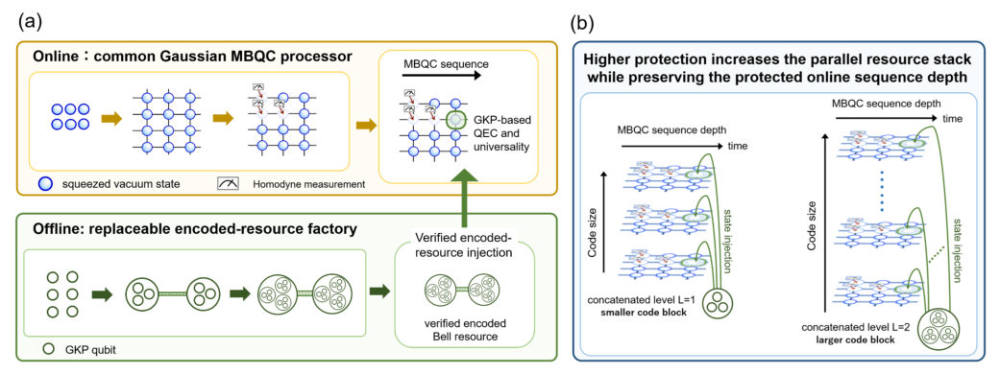
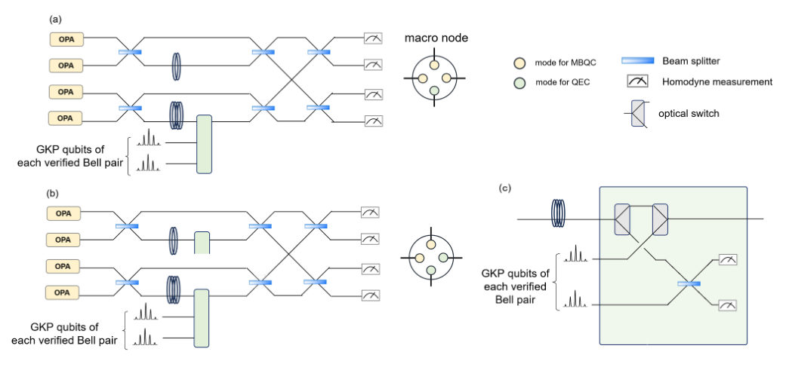
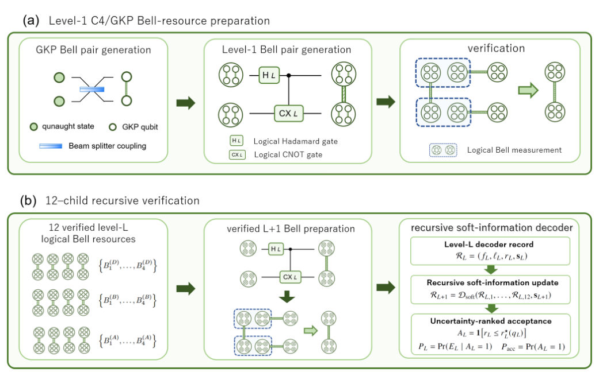
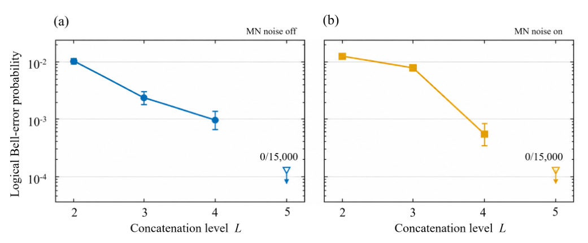
Summary. This paper introduces a modular architecture for fault-tolerant quantum computation using optical systems. It defines a formal interface to separate the preparation of verified quantum resources (the 'factory') from the actual computation (the 'processor'). By combining GKP qubits with Gaussian MBQC, the authors show that this modular approach can suppress logical errors effectively while maintaining a common, shallow online processing set.
Why it may be interesting. This work is highly relevant as it proposes a concrete, scalable blueprint for fault-tolerant quantum computation in an optical setting, directly addressing resource management and modularity, which are key challenges in quantum optics.
Main problem. The paper addresses the challenge of building a modular, fault-tolerant quantum computation (FTQC) architecture for optical systems by cleanly separating resource preparation from online processing.
Main result. They demonstrate that a defined interface allows for the construction of logical operations with finite-level error suppression, achieving low logical error rates in simulations.
Method. The authors propose a factory--processor interface architecture that manages the flow of verified encoded resources and classical control information between an offline resource preparation module and a reusable online Gaussian processor.
Model / system. The system is based on optical quantum computation using Measurement-Based Quantum Computation (MBQC) on a Gaussian processor built from Continuous-Variable (CV) clusters, utilizing Gottesman--Kitaev--Preskill (GKP) qubits for encoding.
Key observables. Logical Bell-error ordering ($P_5 < P_4 < P_3 < P_2$), effective GKP displacement-noise (measured in dB), and logical error probabilities.
Important parameters / regimes. The concatenation level ($L$), the effective GKP displacement-noise quality (e.g., 12.25 dB), and the noise model (additive-displacement-noise).
Assumptions / limitations. The architecture relies on a formal interface that tracks not only the resource state but also classical records like addresses, roles, and verification outcomes.
Figures summary. Figure 1 illustrates the modular FTQC architecture showing the offline factory supplying verified resources and classical records to the common Gaussian MBQC processor via the interface. Figure 2 details the MBQC platform using a quad-rail lattice (QRL) for 2D CV cluster states.
Paper structure. The paper introduces the modular interface, details the physical implementation using GKP qubits and MBQC, presents the theoretical framework for resource characterization (including soft-decision decoding via LLRs), and concludes with simulation results demonstrating error suppression.
We introduce a factory--processor interface architecture for modular optical fault-tolerant quantum computation that separates code-dependent encoded-resource preparation from reusable online logical processing on a common Gaussian optical processor. Beyond encoded resources, the interface specifies logical outputs, code-to-mode mapping, measurement roles, frame updates, verification records, and resource-injection boundaries. As a concrete realization, we combine an offline verified Bell-resource factory based on a recursively concatenated $C_4$ code with physical Gottesman--Kitaev--Preskill (GKP) qubits with an online time-domain measurement-based quantum computation (MBQC) processor. Under the specified additive-displacement-noise model and fixed postselection policy, simulations support the finite-level logical Bell-error ordering $P_5
Authors: Adarsh Hullahalli, Yusuf Khand, Christos Panagopoulos, Christina Psaroudaki
Type: theory · Category: other · PDF: https://arxiv.org/pdf/2610.32457v1
Analysis basis: full PDF text, analyzed in chunks
Topic relevance: analog quantum simulation 1/5
Summary. This work demonstrates that localized defects, such as magnetic skyrmions, can induce multifractal behavior in magnon wavefunctions within otherwise ordered 2D magnets. By analyzing the scaling properties of these wavefunctions, the authors provide a theoretical framework and a pathway to experimentally observe this mesoscopic quantum phenomenon using uniform AC fields.
Why it may be interesting. The connection between topological defects (skyrmions) and measurable quantum wave function statistics (multifractality) provides a novel diagnostic tool for characterizing complex many-body excitations in magnetic materials.
Main problem. To determine if magnons in crystalline 2D magnets, without disorder or quasiperiodicity, can exhibit multifractal wavefunctions on mesoscopic scales.
Main result. Localized defects, such as point defects or magnetic skyrmions, can generate measurable multifractal structure in above-gap magnon modes, providing a direct, observable route to study mesoscopic magnon multifractality.
Method. The study employs multifractal analysis techniques, calculating generalized dimensions ($ au(q)$, $D_q$) from the scaling of probability moments of the magnon wavefunctions.
Model / system. The system models magnons (spin-wave excitations) in ordered 2D magnets, specifically investigating the effects of localized defects or topological magnetic skyrmions on the magnon eigenmodes.
Key observables. Multifractal diagnostics include the scaling exponents $ au(q)$, generalized dimensions $D_q$, and the singularity spectrum $(\alpha, f(\alpha))$. Experimentally, the dipole-weighted information dimension $D_{ u 1}(\omega)$ is key.
Important parameters / regimes. Mesoscopic scales, defect strength, system size ($L$), and frequency resolution ($\delta\omega$).
Assumptions / limitations. The observed multifractality is mesoscopic and does not persist in the strict thermodynamic limit; the analysis relies on specific definitions of current coupling and multifractal thresholds.
Figures summary. Figures illustrate the generation of multifractal patterns via defect coupling, show diagnostic plots ($ au(q)$, $D_q$) confirming non-linear scaling, and demonstrate the measurable signatures in transport observables.
Paper structure. The paper progresses from establishing the theoretical possibility of multifractality via defects, demonstrating this using both simple defects and skyrmions, and finally quantifying the signatures in transport properties by splitting coupling into multifractal and extended components.
Multifractal wavefunctions fluctuate over a hierarchy of spatial scales, remaining spatially extended while exhibiting strongly nonuniform structure. We show that magnons in otherwise crystalline two-dimensional magnets can exhibit such behavior on mesoscopic scales, without disorder or quasiperiodicity. A localized defect can mix discrete groups of nearly degenerate magnon states in a finite sample, generating multiscale interference patterns and multifractal wavefunctions. We demonstrate this mechanism for both a simple spin defect and topological magnetic skyrmions. Large-scale spin-wave calculations for skyrmions in chiral and frustrated magnets reveal clear multifractal diagnostics over the full accessible range of system sizes of above-gap modes. Crucially, skyrmions make these states experimentally observable by hybridizing them with magnetically active internal deformation modes, which gives a subset of the multifractal states a nonzero magnetic dipole moment. These states can therefore be excited by uniform ac fields and remain distinguishable at realistic frequency resolution, providing a direct route to observing mesoscopic magnon multifractality.
Authors: Igor R. Klebanov, Henry W. Lin, Pavel Meshcheriakov, Jessica Yeh
Type: theory · Category: statistical mechanics · PDF: https://arxiv.org/pdf/2610.32856v1
Analysis basis: full PDF text, analyzed in chunks
Topic relevance: analog quantum simulation 1/5
Summary. This work analyzes the thermal phase diagram of Matrix Quantum Mechanics, a model relevant to string theory, by studying the interplay between singlet and non-singlet states. The authors map out the phase boundary, predicting a BKT transition separating different critical phases. The methodology combines advanced analytical techniques with numerical simulations to characterize this complex phase structure.
Why it may be interesting. The study of phase transitions (like BKT) in complex, interacting quantum systems, even those derived from matrix models, provides deep insights into critical phenomena relevant to many-body physics and condensed matter systems.
Main problem. The paper investigates the thermodynamics and phase diagram of Matrix Quantum Mechanics (MQM) in the infinite N limit, focusing on the role of non-singlet states.
Main result. The authors map out the phase diagram in the coupling-temperature plane, identifying a Berezinskii-Kosterlitz-Thouless (BKT) transition separating low-temperature (c=1) and high-temperature (c=0) phases.
Method. The study employs analytical techniques like non-perturbative matrix bootstrap and perturbation theory, supplemented by Monte Carlo simulations on an inspired lattice model.
Model / system. The system is the quantum mechanics of an N x N Hermitian matrix with a quartic potential, analyzed in the large N limit. The model exhibits distinct singlet and non-singlet sectors.
Key observables. The critical stability curve T_c(g), the BKT transition temperature T_BKT, and the eigenvalue distribution of the zero mode.
Important parameters / regimes. The coupling constant g, the temperature T, and the large N limit.
Assumptions / limitations. The analysis relies on treating the SU(N) symmetry as a global symmetry and utilizing the large N limit to connect to string theory.
Figures summary. The notes mention Figure 1 showing the thermal phase diagram and Figure 2 illustrating three scenarios for the BKT transition location on the critical curve.
Paper structure. The paper progresses by first analyzing the large N limit and the role of non-singlets, deriving the critical curve T_c(g) using various theoretical tools, and finally extending the study to a regular square lattice using a Villain model analyzed via Monte Carlo simulations.
The quantum mechanics of one $N\times N$ Hermitian matrix in the infinite $N$ limit is well known to define a two-dimensional string theory when the quartic coupling constant $g$ is tuned to a special negative value $g_*$. We study the thermodynamics of this Matrix Quantum Mechanics (MQM), treating the SU$(N)$ symmetry as a global symmetry. Crucially, the non-singlets, i.e. states in non-trivial representations of SU$(N)$, implement the effects of vortices on the discretized worldsheets. This random lattice model has the low-temperature $c=1$ and high-temperature $c=0$ phases, with the Berezinskii-Kosterlitz-Thouless (BKT) transition separating them. We map out the phase diagram in the coupling--temperature plane, which is separated by the critical stability curve $T_c(g)$ extending from $g_*< g <0$. We study this curve using the non-perturbative matrix bootstrap and low- and high-temperature perturbation theory, which explain the thermal instability. At low temperatures, thermally excited non-singlets backreact on the Fermi sea of matrix eigenvalues, causing it to spill over. At high temperatures, the theory is described by an effective matrix integral obtained by dimensional reduction on the thermal circle; the eigenvalue distribution of the zero mode becomes unstable at the critical coupling. We conjecture that the BKT transition occurs at a special point on the critical curve and estimate its position. Finally, we switch to the regular square lattice and study the MQM-inspired Villain model, where the link factor is the one-dimensional propagator on a circle. Using Monte Carlo simulations, we map out the BKT transition in this model.
Authors: Naoyuki Kanomata, Hayato Goto
Type: theory · Category: quantum information and computing · PDF: https://arxiv.org/pdf/2610.32267v1
Analysis basis: full PDF text, analyzed in chunks
Topic relevance: quantum measurements 1/5
Summary. This paper proposes a two-layer verification scheme to overcome resource limitations in preparing magic states for fault-tolerant quantum computation. By combining local verification with a global product check, the method successfully mitigates systematic error patterns invisible to simpler checks. The results demonstrate that this approach achieves error suppression scaling comparable to established fault-tolerant codes.
Why it may be interesting. The rigorous error analysis and the development of a structured verification protocol provide a blueprint for building reliable quantum computation primitives, which is fundamental to quantum information theory.
Main problem. The challenge is to resource-efficiently prepare encoded magic states required for universal fault-tolerant quantum computation, especially within high-rate quantum codes.
Main result. The proposed two-layer verification scheme successfully suppresses logical errors, achieving a scaling consistent with fault-tolerant error correction for a distance-5 code.
Method. The authors introduce a two-layer verification protocol: local verification of constituent subblocks followed by a global product-type logical verification after embedding into the target code.
Model / system. The study focuses on the self-dual CSS $[[21, 3, 5]]$ quantum code. The process involves preparing and verifying three Steane-code magic states and embedding them into the larger target code.
Key observables. Logical error rate ($p_L$) and the scaling exponent ($\alpha$) relating $p_L$ to the physical error rate ($p_{ ext{circ}}$).
Important parameters / regimes. The code distance (d=5), the physical error rate ($p_{ ext{circ}}$), and the required number of physical qubits.
Assumptions / limitations. The scheme assumes the target high-rate code supports a transversal implementation of the tensor product of the corresponding logical Clifford operators.
Figures summary. Figures illustrate the two-layer verification overview, the decomposition of the encoder into subblocks, and numerical plots comparing the logical error rate scaling for different state preparation methods.
Paper structure. The paper introduces the problem, details the two-layer verification scheme (Layer 1: local checks; Layer 2: global checks), applies it to the $[[21, 3, 5]]$ code for T- and S-state preparation, and concludes with simulation results demonstrating error suppression.
Encoded magic states are essential for universal fault-tolerant quantum computation, but their resource-efficient preparation in high-rate quantum codes remains challenging. To address this limitation, we propose two-layer verification, which combines local verification of independently prepared subblocks with logical verification after their embedding into a target code. This hierarchy detects harmful error patterns, including even-parity logical-eigenvalue flips that are invisible to a collective product check alone. We demonstrate this scheme for a $[[21,3,5]]$ code by constructing a circuit that embeds three verified seven-qubit Steane-code magic states into the target code. Circuit-level simulations of $T$- and $S$-state preparation show logical-error suppression consistent with the code distance. These results demonstrate the potential of two-layer verification as a design principle for reliable magic-state preparation in quantum codes encoding multiple logical qubits.
Authors: Théotime Freitas, Mattia Udina, Alexandr Alekhin, Niloufar Nilforoushan, Sarah Houver, Alain Sacuto, Benito A. Gonzalez, Ian R. Fisher, Indranil Paul, Yann Gallais
Type: experiment · Category: other · PDF: https://arxiv.org/pdf/2610.32797v1
Analysis basis: full PDF text, analyzed in chunks
Topic relevance: Frenkel-Kontorova 1/5
Summary. This paper uses polarization-resolved Raman scattering on $ ext{ErTe}_3$ to probe the symmetry breaking associated with its Charge Density Wave (CDW) state. The results indicate that the symmetry breaking is consistent with a single-component CDW order parameter. Furthermore, the measurements rule out the presence of significant ferro-axial fluctuations, refining our understanding of CDW physics in these materials.
Why it may be interesting. The detailed symmetry analysis of the CDW state provides insights into the coupling mechanisms between electronic instabilities and lattice distortions, which is relevant to understanding emergent order parameters in strongly correlated systems.
Main problem. The study investigates the nature of the Charge Density Wave (CDW) order in rare-earth tritellurides, specifically determining if the symmetry breaking is single-component or multi-component.
Main result. The symmetry breakings observed follow the emergence of the CDW order, strongly suggesting a single-component CDW order parameter, and the measurements rule out significant ferro-axial fluctuations above the transition temperature.
Method. Polarization-resolved Raman scattering measurements are used to track point-group symmetry breakings across the CDW phase transition in single crystals.
Model / system. The physical system is the rare-earth tritelluride $ ext{ErTe}_3$, which is studied as a prototypical weakly correlated 2D CDW material exhibiting structural and electronic instabilities.
Key observables. CDW amplitude mode (AM) intensity and energy, and symmetry-resolved quantities ($\Sigma_{m'}$ and $\Sigma_m$) derived from polarization-dependent Raman responses.
Important parameters / regimes. The CDW transition temperature ($T_{ ext{CDW}}$) and the temperature dependence of the Raman response relative to $T_{ ext{CDW}}$.
Assumptions / limitations. The analysis assumes that the observed symmetry breakings are directly linked to the CDW order parameter, though the theoretical description based on simple Peierls-like nesting is noted as potentially deficient.
Figures summary. Figures illustrate the temperature dependence of the low-energy Raman response, showing the emergence and polarization dependence of the AM below $T_{ ext{CDW}}$, and quantify symmetry breaking using $\Sigma_{m'}$ and $\Sigma_m$.
Paper structure. The paper analyzes the temperature dependence of the low-energy Raman response, decomposing it by irreducible representations and monitoring symmetry-resolved quantities ($\Sigma_{m'}, \Sigma_m$) to characterize the nature and components of the CDW order parameter.
Recent experiments have revealed unexpected mirror-symmetry breakings in the charge density-wave (CDW) state of rare-earth tritellurides, suggesting a putative ferro-axial CDW state. Here we report polarization-resolved Raman scattering measurements tracking the point-group symmetry breakings across the CDW phase transition in the rare-earth tritelluride ErTe$_3$. We show that the mirror-symmetry breakings follow closely the emergence of the CDW order, suggesting a single component CDW order parameter. Furthermore, Raman measurements in the $A_{2g}$ symmetry channel above the CDW transition temperature indicate the absence of significant ferro-axial fluctuations. We discuss the broad implications of these findings with respect to the nature of the CDW state in the tritellurides.
Papers from primary archives without highlighted authors or any topic match. Click to expand.
Authors: Komal Pandya, Saiyam Sakhuja, Nagaraj Kattian
Type: both · Category: quantum information and computing · PDF: https://arxiv.org/pdf/2610.31824v1
Analysis basis: full PDF text, analyzed in chunks
Summary. This paper proposes a novel quantum-classical framework to tackle the immense computational challenge of planning multi-target Active Debris Removal missions. It uses Gaussian Boson Sampling to intelligently sample promising subsets of debris targets from a weighted orbital graph. These subsets are then optimized classically to find the most efficient mission sequence, advancing the field of space sustainability.
Why it may be interesting. It demonstrates a concrete application of quantum sampling (GBS) to a complex, real-world optimization problem in orbital mechanics, bridging quantum computation with classical astrodynamics.
Main problem. The combinatorial complexity of selecting and sequencing multiple targets for Active Debris Removal (ADR) in orbit is computationally prohibitive.
Main result. The proposed topology-aware quantum-classical framework successfully generates candidate target subsets using Gaussian Boson Sampling (GBS) before optimizing the mission sequence classically.
Method. The framework combines graph theory to model orbital transfers, GBS for quantum-enhanced subset sampling, and multi-objective evolutionary optimization (PyGMO) to minimize mission $\Delta v$ and duration.
Model / system. The system is the near-Earth space environment containing orbital debris, modeled as a weighted orbital-transfer graph. The core computational model is the hybrid quantum-classical pipeline.
Key observables. Hazard Removal Efficiency (HRE), Risk Capture Ratio (RCR), $\Delta v$, Mission Duration, Hafnian Concentration Ratio (HCR), and Graph Conductance (Cond).
Important parameters / regimes. Candidate pool sizes ($N\in\{15,18,22,25\}$) and target cardinalities ($k\in\{3,5\}$); orbital mechanics parameters.
Assumptions / limitations. The problem is decomposed into two stages: quantum-guided subset discovery, followed by classical multi-objective optimization.
Figures summary. The notes mention figures showing object distributions across orbital regimes and historical launch volume, though the specific figure content for this paper is not detailed.
Paper structure. The paper introduces the ADR challenge, details the hybrid framework integrating orbital mechanics, graph theory, GBS, and multi-objective optimization, and evaluates it across benchmark environments using various diagnostic metrics.
The continued growth of orbital debris threatens the safety and sustainability of near-Earth space, making Active Debris Removal (ADR) an important mitigation strategy. Selecting $k$ targets from $N$ candidates yields a combinatorial search space of size $\binom{N}{k}$, making joint target selection and mission sequencing computationally demanding. We present a topology-aware quantum-classical framework integrating orbital mechanics, weighted orbital-transfer graphs, Gaussian Boson Sampling (GBS), and multi-objective evolutionary optimization. Seven target-prioritization strategies represent physical consequence, orbital persistence, conjunction risk, network centrality, community structure, inferred source families, and random selection. GBS generates candidate target subsets from the weighted graph, which are then evaluated using PyGMO-based evolutionary optimization to identify servicing sequences that jointly minimize total velocity increment ($Δv$) and mission duration, accounting for modeled timing, propulsion, and mass feasibility. We evaluate the framework across three benchmark environments, SOCRATES Minefield, Collision Cloud, and Random, with candidate-pool sizes $N\in\{15,18,22,25\}$ and target cardinalities $k\in\{3,5\}$. The experiments characterize how benchmark topology, prioritization strategy, and problem scale relate to sampling behavior and downstream mission performance. By separating candidate-subset generation from detailed trajectory optimization, the framework offers a topology-aware approach to focusing computational effort on a limited set of candidate ADR missions.
Authors: Marco Pompili, Costantino Budroni
Type: theory · Category: quantum information and computing · PDF: https://arxiv.org/pdf/2610.32783v1
Analysis basis: full PDF text, analyzed in chunks
Summary. This paper develops a systematic method to analyze Information Causality (IC) violations by reducing complex multi-copy protocols to single-copy constraints. The authors prove that for many systems, bounding single-copy violations is sufficient to bound all adaptive violations. They derive concrete necessary and sufficient conditions for the CHSH inequality using second-order expansions, significantly advancing the understanding of quantum nonlocality bounds.
Why it may be interesting. The rigorous mathematical characterization of information causality constraints, especially the reduction from multi-copy to single-copy bounds, provides powerful new tools for bounding quantum correlations, which is fundamental to quantum information theory.
Main problem. The paper aims to characterize the constraints imposed by Information Causality (IC) on bipartite post-quantum nonlocal correlations, particularly by bounding single-copy violations.
Main result. Excluding single-copy IC violations is sufficient to exclude all finite-copy adaptive-protocol violations for certain correlation families, and the necessary condition for the CHSH scenario is derived as a simple inequality involving square roots.
Method. The authors use optimization techniques, deterministic reductions (Lemmas 1 and 3), and second-order Taylor expansions of the IC functional to simplify the complex entropic constraints.
Model / system. The study uses an assisted Random Access Coding (RAC) task framework to model the correlations, involving shared probability distributions $P$ and protocols $\pi$. The analysis extends to generalized database entries and the CHSH scenario.
Key observables. The IC deficit ($\Delta_1$ or $\Delta_c$), the quadratic form $\Phi_2$ in the CHSH case, and the derived inequality $|\Theta| \le \sqrt{R} + \sqrt{S}$.
Important parameters / regimes. The number of copies ($c$), the capacity of the underlying channel, and the perturbation parameter $\epsilon$ used in expansions.
Assumptions / limitations. The analysis relies on the deterministic reduction of adaptive protocols to single-copy ones, and the second-order expansions are only valid for small perturbations $\epsilon$.
Figures summary. Figure 1 illustrates the notation for the random access coding task defining IC. Figure 2 shows the structure of a single-copy protocol for information causality.
Paper structure. The paper first establishes the single-copy IC problem via optimization, proves a deterministic reduction connecting multi-copy to single-copy protocols, then analyzes the convexity of the violation, and finally applies second-order expansions to derive necessary and sufficient conditions for the CHSH scenario.
Information causality is a physical principle that constrains bipartite post-quantum nonlocal correlations from information-theoretic assumptions. A direct characterization of the correlations satisfying it, however, remains difficult because the defining entropic condition must hold for all admissible protocols in the corresponding task. Here, we formulate the single-copy information causality problem as an optimization over all protocol parameters and simplify it by proving a deterministic reduction. We then show that generic adaptive multi-copy protocols can be represented as single-copy protocols applied to an effective behavior obtained by local wirings. As a consequence, for families of correlations closed under wirings, excluding single-copy violations suffices to exclude all finite-copy adaptive-protocol violations. We formulate the resulting membership and set-inclusion problems as optimization problems and discuss possible semidefinite programming relaxations. As an application, we study expansions of the information causality functional around zero-capacity channels, generalizing a method recently employed by Gachechiladze and Miklin to derive the Tsirelson--Landau--Masanes boundary from information causality. For expansions centered on channels whose output distribution has full support, imposing the second-order constraints for all single-copy protocols characterizes exactly the set of macroscopic locality in the CHSH scenario. Expanding instead around appropriate constant-output channels with perturbations that change the channel support, we show that every single-copy IC violation can be witnessed already at first order with a channel of arbitrarily small capacity.
Authors: Saverio Monaco, Jamal Slim, Ran Xue, Dirk Krücker, Kerstin Borras
Type: both · Category: quantum information and computing · PDF: https://arxiv.org/pdf/2610.32571v1
Analysis basis: full PDF text, analyzed in chunks
Summary. This paper introduces the Pauli propagation framework to overcome the computational bottleneck of training large parametrized quantum circuits for QML. By propagating observables backward, the authors derive an explicit, classically computable loss function. This enables the successful pre-training of models on large-scale quantum simulations before deploying the resulting parameters onto actual quantum hardware.
Why it may be interesting. It provides a crucial computational bridge, allowing complex quantum algorithms to be trained using classical resources by mapping quantum expectation values to classical functions, which is vital for scaling QML beyond current hardware limitations.
Main problem. Scaling Parametrized Quantum Circuits (PQCs) for Quantum Machine Learning (QML) is limited by the computational expense of gradient estimation methods like the parameter-shift rule for large qubit numbers.
Main result. The authors developed a Pauli propagation framework that allows for the explicit, classical calculation of the loss function for PQCs, enabling training on circuits exceeding current statevector simulation limits.
Method. The Pauli propagation framework evolves circuit observables backward through the quantum circuit, yielding an explicit parametric expression for the expectation value that can be minimized entirely on classical hardware.
Model / system. The work applies to general QML problems where the loss is an expectation value of circuit observables, demonstrated on a 2D Ising model using VQE and training a generative model for binary images on up to 64 qubits.
Key observables. The expectation value of the circuit's observables, $\langle O angle( heta)$, which serves as the training objective.
Important parameters / regimes. Weight ($w(P)$) and Trigonometric Degree ($|S_x|)$ are used as parameters for truncating the Pauli propagation to maintain tractability.
Assumptions / limitations. The primary assumption is that the loss function can be expressed as an expectation value of observables, and the method relies on weight and degree truncations to manage the exponential complexity of the Pauli paths.
Figures summary. Figure 1 illustrates the overall workflow: defining the ansatz/observable, propagating the observable, obtaining the function of parameters, minimizing the loss classically, and deploying the trained parameters on quantum hardware.
Paper structure. The paper follows a structure of identifying the scaling bottleneck in QML, introducing the Pauli propagation framework with associated truncation strategies, demonstrating its application to VQE on an Ising model, and finally applying it to a generative modeling task.
Scaling parametrized quantum circuits to a larger number of qubits is a central challenge in Quantum Machine Learning: gradient estimation via the parameter-shift rule quickly becomes prohibitively expensive, while gradient-free optimizers offer limited convergence guarantees. We apply the Pauli propagation framework to a broad class of Quantum Machine Learning problems in which the loss is expressed as a function of expectation values of the circuit's observables, while keeping the relevant quantity of interest, such as the quantum state or its samples, classically intractable to compute. By propagating the observables backward through the circuit, we obtain an explicit parametric expression for the loss that can be minimized entirely on classical hardware. We also present complementary strategies to make propagation tractable at large scale, including weight-based and degree-based truncations and pruning heuristics. We demonstrate the approach on two benchmarks run on 64-qubit circuits: Variational Quantum Eigensolver on a two-dimensional Ising model, and training of a discrete-type generative model for binary images. In both cases, the classically pre-trained parameters are deployed on the IBM quantum processor ibm_berlin. For generative learning, we additionally show that the circuits considered here require substantially fewer parametrized gates than IQP-style ansätze, reducing transpilation overhead and making deployment on current quantum hardware feasible.
← Index · ← Previous · Next →